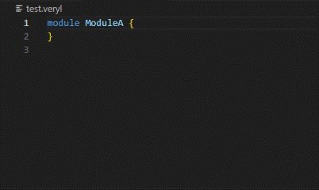
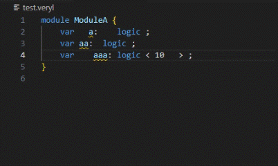

ハードウェア記述言語 Veryl

Veryl は SystemVerilog をベースに設計されたハードウェア記述言語であり、以下のような特徴があります。
最適化された構文
Verylは、SystemVerilogの経験者にとって親しみやすい基本構文に基づきながら、論理設計に最適化された構文を採用しています。この最適化には、たとえば合成可能性の保証やシミュレーション結果の一致の保証、頻出する定型文を簡素化する多数の構文などの提供が含まれます。このアプローチにより、学習の容易さ、設計プロセスの信頼性と効率の向上、およびコードの記述の容易さが実現されます。
相互運用性
VerylはSystemVerilogとの相互運用性を考慮して設計されており、既存のSystemVerilogコンポーネントやプロジェクトとの組み合わせや部分的な置き換えをスムーズに行うことができます。さらに、VerylからトランスパイルされたSystemVerilogソースコードは、その高い可読性により、シームレスな統合やデバッグを可能にします。
生産性
Verylはパッケージマネージャ、ビルドツール、そしてVSCode、Vim、Emacsなどの主要なエディタに対応するリアルタイムチェッカー、自動補完機能、自動フォーマッタなど、豊富な開発支援ツールを備えています。これらのツールは、開発プロセスを加速し、生産性を大幅に向上させることができます。
これらの特性により、Verylは設計者が高品質なハードウェア設計をより効率的かつ生産的に行うための強力なサポートを提供します。
特徴
この章ではVerylの特徴的な機能をわかりやすい例とともに紹介します。
- リアルタイム診断
- 自動フォーマット
- 組み込みテスト
- 依存関係管理
- ジェネリクス
- 末尾カンマ
- クロックとリセットの抽象化
- ドキュメンテーションコメント
always_ffでの複合代入演算子- 独立した名前空間を持つenumバリアント
- ビット連結における
repeat if/case式- 範囲
for/inside/outside msb記法let文- 名前付きブロック
- 可視性制御
リアルタイム診断
変数の未定義・未使用・未代入といった問題はエディタでの編集中にリアルタイムに通知されます。次の例では、未使用変数として通知された変数に _ プレフィックスを付加することで未使用であることを明示し、警告を抑制しています。

ビデオが再生されない場合1
自動フォーマット
エディタと連携した自動フォーマット機能のほか、コマンドラインでのフォーマットやCIでのフォーマットチェックも可能です。

ビデオが再生されない場合1
組み込みテスト
SystemVerilogで書かれたテストコードをVerylに埋め込み、veryl test コマンドで実行することができます。
#[test(test1)]
embed (inline) sv{{{
module test1;
initial begin
assert (0) else $error("error");
end
endmodule
}}}
依存関係管理
Verylには依存関係の管理機能が組み込まれており、プロジェクト設定に以下のようにライブラリのリポジトリパスとバージョンを追加するだけで、簡単にライブラリを組み込むことができます。
[dependencies]
"https://github.com/veryl-lang/sample" = "0.1.0"
ジェネリクス
ジェネリクスによるコード生成は従来のパラメータオーバーライドよりさらに再利用性の高いコードを記述することができます。以下の例のような関数のパラメータだけでなく、インスタンスのモジュール名や構造体定義の型名もパラメータ化することができます。
| SystemVerilog | Veryl |
|---|---|
|
|
末尾カンマ
末尾カンマは、リストの最後の要素の後ろにカンマが置かれる構文です。これにより、要素の追加や削除が容易になり、バージョン管理システムにおける不必要な差異を減らすことができます。
| SystemVerilog | Veryl |
|---|---|
|
|
クロックとリセットの抽象化
クロックの極性やリセットの極性と同期性を構文上指定する必要はなく、ビルド時の設定で指定することができます。これにより同じVerylのコードからASIC向けの負極性・非同期リセットとFPGA向けの正極性・同期リセットのそれぞれのコードを生成することができます。
さらに、明示的な clock と reset 型により、レジスタへのクロック・リセット接続が正しく行われているかどうかを確認することができます。モジュール内にクロックとリセットが1つだけの場合、レジスタへの接続を省略することもできます。
| SystemVerilog | Veryl |
|---|---|
|
|
ドキュメンテーションコメント
ドキュメンテーションコメントとしてモジュールの説明を書いておくとドキュメントを自動生成することができます。単なるテキストだけでなく、マークダウン形式やWaveDromによる波形記述を使用することができます。
| SystemVerilog | Veryl |
|---|---|
|
|
always_ff での複合代入演算子
ノンブロッキング専用の代入演算子はなく、always_ff 内ではノンブロッキング代入が、 always_comb 内ではブロッキング代入が推論されます。そのため always_ff 内でも always_comb 内と同様に様々な複合代入演算子を使用することができます。
| SystemVerilog | Veryl |
|---|---|
|
|
独立した名前空間を持つenumバリアント
enumのバリアントはenum毎に独立した名前空間を持っており意図しない名前の衝突を防ぐことができます。
| SystemVerilog | Veryl |
|---|---|
|
|
ビット連結における repeat
ビット連結における繰り返し記述として明示的な repeat 記法を採用し、 複雑な {} の組み合わせより可読性が向上しています。
| SystemVerilog | Veryl |
|---|---|
|
|
if / case 式
三項演算子の代わりに if 式と case 式を採用することで、比較するアイテム数が多い場合の可読性が向上します。
| SystemVerilog | Veryl |
|---|---|
|
|
範囲 for / inside / outside
閉区間 ..= と半開区間 .. を表す記法を導入し、 for 、inside で範囲を統一的に記述できるようにしました。また、inside の逆を意味する outside も導入しました。
| SystemVerilog | Veryl |
|---|---|
|
|
msb 記法
最上位ビットを示す msb 記法により、パラメータから最上位ビットを計算する必要がなくなり、より意図を明確にすることができます。
| SystemVerilog | Veryl |
|---|---|
|
|
let 文
変数宣言と同時に値を束縛する専用の let 文が用意されており、SystemVerilogではサポートされていなかった様々な場所で使用することができます。
| SystemVerilog | Veryl |
|---|---|
|
|
名前付きブロック
変数のスコープを限定するための名前付きブロックを定義することができます。
| SystemVerilog | Veryl |
|---|---|
|
|
可視性制御
pub キーワードの付かないモジュールはプロジェクト外から参照できず、ドキュメントの自動生成にも含まれません。これによりプロジェクト外に公開したいものと内部実装とを区別することができます。
| SystemVerilog | Veryl |
|---|---|
|
|
いくつかのブラウザはデフォルトでGIF動画の再生を停止しています。ブラウザの設定を確認してください。
はじめに
Veryl を使ってみましょう。この章では Veryl のインストール、サンプルプロジェクトの作成とビルドまでを行います。
インストール
Veryl バイナリをダウンロードしてインストールできます。もし Rust ユーザであれば cargo コマンドでインストールすることもできます。
要件
Veryl は git コマンドを内部で使用します。 git が起動できることを確認しておいてください。
インストール方法の選択
バイナリのダウンロード
リリースページからダウンロードして、パスの通ったところに展開してください。
Cargo
cargo コマンドからインストールすることもできます。
cargo install veryl veryl-ls
エディタ設定
公式には Visual Studio Code と Vim / Neovim がサポートされています。
Visual Studio Code
Visual Studio Code 向けに Veryl 拡張が提供されています。拡張はファイルタイプの検出とシンタックスハイライト、言語サーバの組み込みを提供します。拡張パネルから “Veryl” で検索するか、以下の URL からインストールしてください。
Veryl extension for Visual Studio Code
Vim / Neovim
Vim / Neovim 向けに Veryl プラグインが提供されています。プラグインはファイルタイプの検出とシンタックスハイライトを提供します。プラグインのインストールと言語サーバの組み込みは以下の URL を参照してください。
そのほかのエディタ
Veryl は言語サーバを提供しているので、言語サーバをサポートしているエディタ（例えば Emacs）であれば利用できます。
Hello, World!
プロジェクトを作る
まず始めに、新しい Veryl プロジェクトを作りましょう。
veryl new hello
コマンドを実行すると、以下のようなディレクトリとファイルが作成されます。
$ veryl new hello
[INFO ] Created "hello" project
$ cd hello
$ tree
.
`-- Veryl.toml
0 directories, 1 file
Veryl.toml はプロジェクトの設定ファイルです。
[project]
name = "hello"
version = "0.1.0"
全設定の説明はこちら。
コードを書く
ソースコードはプロジェクトディレクトリ内のどこに書いても構いません。これは Veryl プロジェクトが独立したプロジェクトである場合もあれば、他のSystemVerilog プロジェクトに組み込まれている場合もあるからです。Veryl のソースコードの拡張子は .veryl です。
例えば以下のコードを src/hello.veryl に書いてみましょう。
module ModuleA {
initial {
$display("Hello, world!");
}
}
$ tree
.
|-- src
| `-- hello.veryl
`-- Veryl.toml
1 directory, 2 files
注：この本のいくつかのソースコードには、マウスをホバーすると現れるプレイボタン “▶” があります。ボタンをクリックすると、トランスパイルされた SystemVerilog のコードが現れます。
module ModuleAのコードのボタンを押してみましょう。
ビルドする
veryl build コマンドで SystemVerilog のソースコードを生成できます。
$ veryl build
[INFO ] Processing file ([path to hello]/src/hello.veryl)
[INFO ] Output filelist ([path to hello]/hello.f)
$ tree
.
|-- dependencies
|-- hello.f
|-- src
| |-- hello.sv
| `-- hello.veryl
`-- Veryl.toml
2 directories, 4 files
デフォルトでは SystemVerilog のコードは Veryl のコードと同じディレクトリに生成されます。つまり src/hello.sv です。
module hello_ModuleA;
initial begin
$display("Hello, world!");
end
endmodule
さらに、生成されたコードのファイルリスト hello.f も生成されます。これは SystemVerilog コンパイラで使用できます。Verilator で使用するには以下のようにします。
$ verilator --cc -f hello.f
コード例
Veryl は SystemVerilog とほとんど同じセマンティクスを持っています。もし SystemVerilog に慣れていれば、いくつかの例をみるだけで Veryl の構文をだいたい把握できるでしょう。
この小さな例では、コメントに SystemVerilog 構文との違いが書かれています。
module ModuleA (
// 識別子が先で `:` の後に型が来ます
// ビット幅は `<>` で表されます
i_data: input logic<10>,
o_data: output logic<10>,
// `begin`/`end` ではなく `{}` を使います
) {
assign o_data = i_data;
}
さらに、この章のコードブロックは編集することもできます。それぞれのコードを編集して実行してみましょう。
Veryl のソースコードは SystemVerilog と同様に、module、interface、package を持ちます。この章ではそれらの例を示します。
モジュール
// モジュール定義
module ModuleA #(
param ParamA: u32 = 10,
local ParamB: u32 = 10, // 末尾カンマが可能です
) (
i_clk : input clock , // `clock` はクロックのための特別な型です
i_rst : input reset , // `reset` はリセットのための特別な型です
i_sel : input logic ,
i_data: input logic<ParamA> [2], // `[]` は SystemVerilog のアンパック配列です
o_data: output logic<ParamA> , // `<>` は SystemVerilog のパック配列です
) {
// ローカルパラメータ宣言
// モジュール内では `param` は使えません
local ParamC: u32 = 10;
// 変数宣言
var r_data0: logic<ParamA>;
var r_data1: logic<ParamA>;
var r_data2: logic<ParamA>;
// 値の束縛
let _w_data2: logic<ParamA> = i_data;
// リセット付き always_ff 文
// `always_ff` はクロック（必須）とリセット（オプション）を持ちます
// `if_reset` は `if (i_rst)` を意味し、リセット極性を隠蔽するための構文です
// `if` 文に `()` はいりません
// `always_ff` 内の `=` はノンブロッキング代入です
always_ff (i_clk, i_rst) {
if_reset {
r_data0 = 0;
} else if i_sel {
r_data0 = i_data[0];
} else {
r_data0 = i_data[1];
}
}
// リセットなし always_ff 文
always_ff (i_clk) {
r_data1 = r_data0;
}
// モジュール内にクロックとリセットが1つしかない場合
// クロックとリセットの指定は省略できます
always_ff {
r_data2 = r_data1;
}
assign o_data = r_data1;
}
インスタンス
module ModuleA #(
param ParamA: u32 = 10,
) (
i_clk : input clock ,
i_rst : input reset ,
i_data: input logic<ParamA>,
o_data: output logic<ParamA>,
) {
var r_data1: logic<ParamA>;
var r_data2: logic<ParamA>;
assign r_data1 = i_data + 1;
assign o_data = r_data2 + 2;
// インスタンス宣言
// インスタンス宣言は `inst` キーワードではじまります
// ポート接続は `()` 内で指定します
// 各ポートの接続は `[port_name]:[variable]` のような形式になります
// `[port_name]` は `[port_name]:[port_name]` を意味します
inst u_module_b: ModuleB (
i_clk ,
i_data: r_data1,
o_data: r_data2,
);
// パラメータオーバーライド付きインスタンス宣言
// パラメータの接続記法はポートと同様です
inst u_module_c: ModuleC #(ParamA, ParamB: 10,);
}
module ModuleB #(
param ParamA: u32 = 10,
) (
i_clk : input clock ,
i_data: input logic<ParamA>,
o_data: output logic<ParamA>,
) {
assign o_data = 1;
}
module ModuleC #(
param ParamA: u32 = 10,
param ParamB: u32 = 10,
) () {}
インターフェース
// インターフェース定義
interface InterfaceA #(
param ParamA: u32 = 1,
param ParamB: u32 = 1,
) {
local ParamC: u32 = 1;
var a: logic<ParamA>;
var b: logic<ParamA>;
var c: logic<ParamA>;
// modport 定義
modport master {
a: input ,
b: input ,
c: output,
}
modport slave {
a: input ,
b: input ,
c: output,
}
}
module ModuleA (
i_clk: input clock,
i_rst: input reset,
// modport によるポート宣言
intf_a_mst: modport InterfaceA::master,
intf_a_slv: modport InterfaceA::slave ,
) {
// インターフェースのインスタンス
inst u_intf_a: InterfaceA [10];
}
パッケージ
// パッケージ定義
package PackageA {
local ParamA: u32 = 1;
local ParamB: u32 = 1;
function FuncA (
a: input logic<ParamA>,
) -> logic<ParamA> {
return a + 1;
}
}
module ModuleA {
let a : logic<10> = PackageA::ParamA;
let _b: logic<10> = PackageA::FuncA(a);
}
言語リファレンス
この章では Veryl の言語仕様について説明します。
ソースコードの構造
Veryl のソースコードはいくつかの module、interface、package からなります。
module ModuleA {}
module ModuleB {}
interface InterfaceA {}
package PackageA {}
トランスパイルされたコードにおける module、interface、package の名前には先頭にプロジェクト名が付きます。このサンプルコードでは project_ が付きます。これはプロジェクト間で名前が衝突するのを防ぐためです。
字句構造
この章では Veryl の字句構造について説明します。まず始めに、全体的なことがらからです。
エンコーディング
Veryl のソースコードは UTF-8 エンコーディングでなければなりません。
空白
（空白）、\t、\n は空白として扱われ、Veryl のパーサはこれらを全て無視します。
コメント
行コメントと複数行コメントが使えます。ほとんどのコメントはトランスパイルされたコードにも出力されます。
// 行コメント
/*
複数
行
コメント
*/
ドキュメンテーションコメント
/// ではじまる行コメントはドキュメンテーションコメントとして扱われます。ドキュメンテーションコメントはドキュメントの生成に使われます。
/// ドキュメンテーションコメント
識別子
識別子は ASCII のアルファベットと数値、 _ からなります。先頭が数値であってはなりません。正式な定義は以下の正規表現です。
[a-zA-Z_][a-zA-Z0-9_]*
文字列
" で囲んだものが文字列になります。\" や \n のように \ によるエスケープも可能です。
"Hello, World!"
演算子
ほとんどの演算子は SystemVerilog と同じです。いくつか違いがあるので注意してください。
<:小なり演算子です。SystemVerilog の<と同じです。>:大なり演算子です。SystemVerilog の>と同じです。
// 単項算術演算
a = +1;
a = -1;
// 単項論理演算
a = !1;
a = ~1;
// 単項集約演算
a = &1;
a = |1;
a = ^1;
a = ~&1;
a = ~|1;
a = ~^1;
a = ^~1;
// 二項算術演算
a = 1 ** 1;
a = 1 * 1;
a = 1 / 1;
a = 1 % 1;
a = 1 + 1;
a = 1 - 1;
// シフト演算
a = 1 << 1;
a = 1 >> 1;
a = 1 <<< 1;
a = 1 >>> 1;
// 比較演算
a = 1 <: 1;
a = 1 <= 1;
a = 1 >: 1;
a = 1 >= 1;
a = 1 == 1;
a = 1 != 1;
a = 1 === 1;
a = 1 !== 1;
a = 1 ==? 1;
a = 1 !=? 1;
// ビット演算
a = 1 & 1;
a = 1 ^ 1;
a = 1 ~^ 1;
a = 1 ^~ 1;
a = 1 | 1;
// 二項論理演算
a = 1 && 1;
a = 1 || 1;
数値
整数
// 整数
0123456789
01_23_45_67_89
// 2進数
32'b01xzXZ
32'b01_xz_XZ
// 8進数
32'o01234567xzXZ
32'o01_23_45_67_xz_XZ
// 10進数
32'd0123456789
32'd01_23_45_67_89
// 16進数
128'h0123456789abcdefxzABCDEFXZ
128'h01_23_45_67_89_ab_cd_ef_xz_AB_CD_EF_XZ
全ビットのセット
// 全て 0
'0
// 全て 1
'1
// 全て x
'x
'X
// 全て z
'z
'Z
幅なし整数
ビット幅指定は省略することができます。省略された場合、トランスパイルされたコードでは適切なビット幅が付与されます。
module ModuleA {
local a0: u64 = 'b0101;
local a1: u64 = 'o01234567;
local a2: u64 = 'd0123456789;
local a3: u64 = 'h0123456789fffff;
}
指定ビットのセット
“全ビットのセット” にビット幅指定を付与することもできます。
module ModuleA {
local a0: u64 = 1'0;
local a1: u64 = 2'1;
local a2: u64 = 3'x;
local a3: u64 = 4'z;
}
浮動小数点数
// 浮動小数点数
0123456789.0123456789
01_23_45_67_89.01_23_45_67_89
// 指数表記
0123456789.0123456789e+0123456789
01_23_45_67_89.01_23_45_67_89E-01_23_45_67_89
配列リテラル
'{} は配列リテラルを表します。リテラル内には式、repeat キーワード、default キーワードを配置することができます。
module ModuleA {
let _a: logic [3] = '{1, 2, 3};
let _b: logic [3] = '{1 repeat 3}; // '{1, 1, 1}
let _c: logic [3] = '{default: 3}; // '{3, 3, 3}
}
データ型
この章ではデータ型について説明します。
組み込み型
幅指定可能な4値データ型
logic は4値（0、1、x、z）のデータ型です。幅は logic のあとの <> で指定できます。<X, Y, Z,,,> のように多次元指定も可能です。
module ModuleA {
let _a: logic = 1;
let _b: logic<10> = 1;
let _c: logic<10, 10> = 1;
}
幅指定可能な2値データ型
bit は2値（0、1）のデータ型です。幅は logic のあとの <> で指定できます。<X, Y, Z,,,> のように多次元指定も可能です。
module ModuleA {
let _a: bit = 1;
let _b: bit<10> = 1;
let _c: bit<10, 10> = 1;
}
整数型
整数型にはいくつかの種類があります。
u32：32ビットの符号なし整数u64：64ビットの符号なし整数i32：32ビットの符号付き整数i64：64ビットの符号付き整数
module ModuleA {
let _a: u32 = 1;
let _b: u64 = 1;
let _c: i32 = 1;
let _d: i64 = 1;
}
浮動小数点数型
浮動小数点数型にもいくつかの種類があります。
f32：32ビット浮動小数点数f64：64ビット浮動小数点数
いずれも IEEE Std 754 準拠の表現です。
module ModuleA {
let _a: f32 = 1.0;
let _b: f64 = 1.0;
}
文字列型
string は文字列を表す型です。
module ModuleA {
let _a: string = "";
}
Type型
type は型の種類を表す型です。type 型の変数は param か local としてのみ定義可能です。
module ModuleA {
local a: type = logic;
local b: type = logic<10>;
local c: type = u32;
}
ユーザ定義型
構造体
struct は複合データ型です。いくつかのフィールドを持つことができ、. 演算子を通してアクセスできます。
module ModuleA {
struct StructA {
member_a: logic ,
member_b: logic<10>,
member_c: u32 ,
}
var a: StructA;
assign a.member_a = 0;
assign a.member_b = 1;
assign a.member_c = 2;
}
列挙型
enum は列挙型です。名前の付いたバリアントを複数持ち、enum 型の変数にはそのバリアントのうち1つだけをセットできます。バリアント名は [enum name]::[variant name] の形式で指定可能です。それぞれのバリアントは対応する整数値を持ち、= で指定することができます。指定されなかった場合は自動的に割り当てられます。
module A {
enum EnumA: logic<2> {
member_a,
member_b,
member_c = 3,
}
var a: EnumA;
assign a = EnumA::member_a;
}
ユニオン
union はパックされたタグなしの直和型で、SystemVerilog では packed union にトランスパイルされます。ユニオンのそれぞれのバリアントの幅は同じでなければなりません。
module A {
union UnionA {
variant_a: logic<8> ,
variant_b: logic<2, 4> ,
variant_c: logic<4, 2> ,
variant_d: logic<2, 2, 2>,
}
var a : UnionA;
assign a.variant_a = 8'haa;
}
型定義
type キーワードを使って、スカラー型や配列型への型エイリアスを定義することができます。
module A {
type word_t = logic <16> ;
type regfile_t = word_t [16];
type octbyte = bit <8> [8] ;
}
配列
任意のデータ型に対して [] と付与することで配列を定義することができます。配列の長さは [] 内の値で指定します。
module ModuleA {
struct StructA {
A: logic,
}
enum EnumA: logic {
A,
}
var a: logic [20];
var b: logic <10> [20];
var c: u32 [20];
var d: StructA [20];
var e: EnumA [20];
assign a[0] = 0;
assign b[0] = 0;
assign c[0] = 0;
assign d[0] = 0;
assign e[0] = 0;
}
[X, Y, Z,,,] のように多次元配列も定義できます。
module ModuleA {
struct StructA {
A: logic,
}
enum EnumA: logic {
A,
}
var a: logic [10, 20, 30];
var b: logic <10> [10, 20, 30];
var c: u32 [10, 20, 30];
var d: StructA [10, 20, 30];
var e: EnumA [10, 20, 30];
assign a[0][0][0] = 0;
assign b[0][0][0] = 0;
assign c[0][0][0] = 0;
assign d[0][0][0] = 0;
assign e[0][0][0] = 0;
}
クロックとリセット
clock はクロック配線を表す特別な型です。クロックの極性を指定するため以下の3種類があります。
clock: ビルド時の設定で指定される極性を持つクロック型clock_posedge: 正極性のクロック型clock_negedge: 負極性のクロック型
reset はリセット配線を表す特別な型です。リセットの極性と同期・非同期を指定するため以下の5種類があります。
reset: ビルド時の設定で指定される極性と同期性を持つリセット型reset_async_high: 正極性の非同期リセット型reset_async_low: 負極性の非同期リセット型reset_sync_high: 正極性の同期リセット型reset_sync_low: 負極性の同期リセット型
特別な要件がなければ、コードの再利用を高めるため clock と reset の使用を推奨します。
module ModuleA (
i_clk : input clock ,
i_clk_p : input clock_posedge ,
i_clk_n : input clock_negedge ,
i_rst : input reset ,
i_rst_a : input reset_async_high,
i_rst_a_n: input reset_async_low ,
i_rst_s : input reset_sync_high ,
i_rst_s_n: input reset_sync_low ,
) {
var a: logic;
var b: logic;
var c: logic;
always_ff (i_clk, i_rst) {
if_reset {
a = 0;
} else {
a = 1;
}
}
always_ff (i_clk_p, i_rst_a) {
if_reset {
b = 0;
} else {
b = 1;
}
}
always_ff (i_clk_n, i_rst_s_n) {
if_reset {
c = 0;
} else {
c = 1;
}
}
}
式
この章では式について説明します。式は変数や演算子、関数呼び出しなどを組み合わせたもので、評価して値を得ることができます。
演算子の優先順位
式内での演算子の優先順位は SystemVerilog とほとんど同じです。
| 演算子 | 結合性 | 優先順位 |
|---|---|---|
() [] :: . | 左 | 高い |
+ - ! ~ & ~& | ~| | ||
^ ~^ ^~ (単項) | 左 | |
** | 左 | |
* / % | 左 | |
+ - (二項) | 左 | |
<< >> <<< >>> | 左 | |
<: <= >: >= | 左 | |
== != === !== ==? !=? | 左 | |
& (二項) | 左 | |
^ ~^ ^~ (二項) | 左 | |
|(二項) | 左 | |
&& | 左 | |
|| | 左 | |
= += -= *= /= %= &= ^= |= | ||
<<= >>= <<<= >>>= | なし | |
{} | なし | 低い |
関数呼び出し
関数は function_name(argument) の形式で呼び出すことができます。$clog2 のような SystemVerilog のシステム関数も使えます。
module ModuleA {
let _a: logic = PackageA::FunctionA(1, 1);
let _b: logic = $clog2(1, 1);
}
package PackageA {
function FunctionA (
a: input logic,
b: input logic,
) {}
}
連結
{} はビット連結を表します。{} の中では repeat キーワードを使うことで指定されたオペランドを繰り返すこともできます。
module ModuleA {
let a : logic<10> = 1;
let b : logic<10> = 1;
let _c: logic = {a[9:0], b[4:3]};
let _d: logic = {a[9:0] repeat 10, b repeat 4};
}
if
if を用いた条件式を使えます。if キーワードの後に条件を示す節を置きますが、() で囲む必要はありません。if 式は常になんらかの値に評価される必要があるため else は必須です。
module ModuleA {
let a: logic<10> = 1;
var b: logic<10>;
assign b = if a == 0 {
1
} else if a >: 1 {
2
} else {
3
};
}
case
もう一つの条件式が case です。case は 式: 式 という形式の条件を複数持ちます。もし case キーワードの後の式と条件の左側の式が一致すれば、その条件の右側の式が返されます。default はそれ以外の条件が全て失敗したときに返される特別な条件です。case 式は常になんらかの値に評価される必要があるため default は必須です。
module ModuleA {
let a: logic<10> = 1;
var b: logic<10>;
let c: logic<10> = 1;
assign b = case a {
0 : 1,
1 : 2,
c - 1 : 4,
default: 5,
};
}
ビット選択
[] はビット選択演算子です。[] に式を指定すれば1ビットを選択できます。範囲選択する場合は [式:式] とします。
module ModuleA {
let a: logic<10> = 1;
var b: logic<10>;
var c: logic<10>;
assign b = a[3];
assign c = a[4:0];
}
範囲
範囲は範囲演算子で指定できます。範囲演算子には以下の2種類があります。
..：半開区間..=：閉区間
範囲は for 文などの場所で使うことができます。
module ModuleA {
initial {
for _i: u32 in 0..10 {}
for _j: u32 in 0..=10 {}
}
}
msb / lsb
msb と lsb は [] によるビット選択で使用できます。msb はオペランドの最上位ビットを意味します。lsb はオペランドの最下位ビットを意味し、0と同じです。
module ModuleA {
let a : logic<10> = 1;
let _b: logic<10> = a[msb - 3:lsb];
let _c: logic<10> = a[msb - 1:lsb + 1];
}
inside / outside
inside は 指定された式が {} で与えられた条件内にあるかどうかを調べます。条件は単一の式または範囲を指定できます。条件を満たすとき inside は 1 を、そうでなければ 0 を返します。outside はその逆です。
module ModuleA {
var a: logic;
var b: logic;
assign a = inside 1 + 2 / 3 {0, 0..10, 1..=10};
assign b = outside 1 * 2 - 1 {0, 0..10, 1..=10};
}
文
この章では文について説明します。文は always_ff や always_comb などいくつかの宣言で使用することができます。
代入
代入文は 変数 = 式; の形式です。SystemVerilog と異なり、always_comb でも always_ff でも代入演算子は = です。以下のような代入演算子もあります。
+=：加算代入-=：減算代入*=：乗算代入/=：除算代入%=：剰余代入&=：ビットAND代入|=：ビットOR代入^=：ビットXOR代入<<=：論理左シフト代入>>=：論理右シフト代入<<<=：算術左シフト代入>>>=：算術右シフト代入
module ModuleA (
i_clk: input clock,
) {
let a: logic<10> = 1;
var b: logic<10>;
var c: logic<10>;
var d: logic<10>;
var e: logic<10>;
always_comb {
b = a + 1;
c += a + 1;
}
always_ff (i_clk) {
d = a + 1;
e -= a + 1;
}
}
関数呼び出し
関数呼び出しは文として使うこともできます。この場合、関数の戻り値は無視されます。
module ModuleA {
initial {
$display("Hello, world!");
}
}
if
if は文として使うこともできます。if 式との違いは {} 内に文を書くことです。
module ModuleA {
let a: logic<10> = 1;
var b: logic<10>;
always_comb {
if a == 0 {
b = 1;
} else if a >: 1 {
b = 2;
} else {
b = 3;
}
}
}
case
case は文として使うこともできます。条件の右側は文になります。
module ModuleA {
let a: logic<10> = 1;
var b: logic<10>;
always_comb {
case a {
0: b = 1;
1: b = 2;
2: {
b = 3;
b = 3;
b = 3;
}
default: b = 4;
}
}
}
for
for 文は繰り返しを表します。in キーワードの前にループ変数を、後に範囲を書きます。
break を使ってループを中断することもできます。
module ModuleA {
var a: logic<10>;
always_comb {
for i: u32 in 0..10 {
a += i;
if i == 5 {
break;
}
}
}
}
return
return 文は関数からの戻りを示します。return キーワードの後の式は関数の戻り値です。
module ModuleA {
function FunctionA () -> u32 {
return 0;
}
}
let
let 文はある名前に値を束縛します。これは always_ff 、 always_comb および関数宣言の中で使うことができます。
let 文はブロック中のどこにでも置くことができます。
module ModuleA (
i_clk: input clock,
) {
var a: logic;
var b: logic;
var c: logic;
always_ff (i_clk) {
let x: logic = 1;
a = x + 1;
}
always_comb {
let y: logic = 1;
b = y + 1;
let z: logic = 1;
c = z + 1;
}
}
宣言
この章では宣言について説明します。
変数
変数宣言は var キーワードで始まり、変数名、:、変数の型と続きます。
未使用の変数は警告が発生します。_ で始まる変数名は未使用変数を意味し、警告を抑制します。
宣言時に名前に値を束縛する場合は var の代わりに let を使います。
module ModuleA {
var _a: logic ;
var _b: logic<10> ;
var _c: logic<10, 10>;
var _d: u32 ;
let _e: logic = 1;
assign _a = 1;
assign _b = 1;
assign _c = 1;
assign _d = 1;
}
パラメータ
パラメータは変数と同時に宣言できます。param キーワードはモジュールヘッダで使用することができ、インスタンス時に上書きできます。local キーワードはモジュール内で使用することができ、上書きできません。
module ModuleA #(
param ParamA: u32 = 1,
) {
local ParamB: u32 = 1;
}
レジスタ
レジスタ変数とは always_ff で代入される変数です。合成フェーズでフリップフロップにマップされます。
always_ff は必須のクロック変数、オプションのリセット変数、{} ブロックをとります。クロックとリセットは () に書きます。指定されたクロックとリセットは clock / reset 型を持ち、そのビット幅は1ビットでなければなりません。
if_reset は always_ff に書ける特別なキーワードで、そのレジスタ変数のリセット条件を示します。if_reset を使う場合は always_ff のリセット変数は必須です。これを使うことで、リセットの極性と同期性を隠ぺいすることができます。実際の極性と同期性は Veryl.toml の [build] セクションで設定できます。
モジュール内にクロックとリセットが1つしかない場合、クロックとリセットの指定は省略できます。
module ModuleA (
i_clk: input clock,
i_rst: input reset,
) {
var a: logic<10>;
var b: logic<10>;
var c: logic<10>;
always_ff (i_clk) {
a = 1;
}
always_ff (i_clk, i_rst) {
if_reset {
b = 0;
} else {
b = 1;
}
}
always_ff {
if_reset {
c = 0;
} else {
c = 1;
}
}
}
組み合わせ回路
always_comb で代入される変数は組み合わせ回路を意味します。
module ModuleA {
let a: logic<10> = 1;
var b: logic<10>;
always_comb {
b = a + 1;
}
}
assign
assign 宣言で変数に式を代入することができます。
module ModuleA {
var a: logic<10>;
assign a = 1;
}
関数
関数は function キーワードで宣言できます。引数は () 内に書き、戻り値の型を -> の後に書きます。
関数が戻り値を持たない場合、-> は省略できます。
module ModuleA {
let a: logic<10> = 1;
var b: logic<10>;
function FunctionA (
a: input logic<10>,
) -> logic<10> {
return a + 1;
}
function FunctionB (
a: input logic<10>,
) {}
assign b = FunctionA(a);
initial {
FunctionB(a);
}
}
initial / final
initial ブロック内の文はシミュレーション開始時に実行され、final は終了時です。どちらも論理合成では無視され、デバッグやアサーションに使うことができます。
module ModuleA {
initial {
$display("initial");
}
final {
$display("final");
}
}
アトリビュート
アトリビュートは変数宣言などいくつかの宣言に注釈を付けることができます。
SV アトリビュート
SV アトリビュートは SystemVerilog のアトリビュートを表し、(* *) という形式の SystemVerilog アトリビュートに変換されます。
module ModuleA {
#[sv("ram_style=\"block\"")]
let _a: logic<10> = 1;
#[sv("mark_debug=\"true\"")]
let _b: logic<10> = 1;
}
生成
宣言や for や if を使って生成することができます。: で示すラベルは生成された複数の宣言を識別するのに必要です。
module ModuleA {
var a: logic<10>;
for i in 0..10 :label {
if i >: 5 :label {
assign a[i] = i + 2;
} else { // else 句のラベルは省略可能
assign a[i] = i + 2;
}
}
}
インスタンス
inst キーワードはモジュールやインターフェースのインスタンス化を表します。インスタンスの名前は inst の後に、インスタンスの型は : の後に書きます。#() でパラメータオーバーライドを、() でポート接続を表します。
module ModuleA #(
param paramA: u32 = 1,
) {
let a: logic<10> = 1;
let b: logic<10> = 1;
inst instB: ModuleB #(
paramA , // 名前によるパラメータ代入
paramB: 10,
) (
a , // 名前によるポート接続
bb: b,
);
}
module ModuleB #(
param paramA: u32 = 1,
param paramB: u32 = 1,
) (
a : input logic<10>,
bb: input logic<10>,
) {}
名前付きブロック
{} ブロックにラベルを付けることができます。そのような名前付きブロックは独立した名前空間を持ちます。
module ModuleA {
:labelA {
let _a: logic<10> = 1;
}
:labelB {
let _a: logic<10> = 1;
}
}
Import / Export
import 宣言は他のパッケージからシンボルをインポートします。モジュール、インターフェース、パッケージの要素としてだけでなくトップレベルにも配置することができます。import 宣言の引数には package::* のようなワイルドカードパターンを使用することができます。
// ファイルスコープインポート
import $sv::SvPackage::*;
module ModuleA {
import PackageA::*;
import PackageA::paramA;
}
package PackageA {
local paramA: u32 = 1;
}
export 宣言は宣言したパッケージからシンボルをエクスポートします。全てのシンボルをエクスポートするには export * を使用します。
package PackageA {
local paramA: u32 = 1;
}
package PackageB {
import PackageA::*;
export paramA;
}
package PackageC {
import PackageA::*;
export *;
}
モジュール
モジュールはソースコードの最上位コンポーネントの1つです。モジュールはオーバーライド可能なパラメータ、接続ポート、内部ロジックを持ちます。
オーバーライド可能なパラメータは #() 内で宣言できます。それぞれのパラメータ宣言は param キーワードで始まり、識別子、:、パラメータの型、デフォルト値で構成されます。
接続ポートは () 内で宣言できます。それぞれのポート宣言は識別子、:、ポートの方向、ポートの型で構成されます。利用可能なポート方向は以下の通りです。
input：入力ポートoutput：出力ポートinout：双方向ポートmodport：インターフェースのmodport
module ModuleA #(
param ParamA: u32 = 0,
param ParamB: u32 = 0,
) (
a: input logic,
b: input logic,
c: input logic,
x: output logic,
) {
always_comb {
if c {
x = a;
} else {
x = b;
}
}
}
インターフェース
インターフェースはソースコードの最上位コンポーネントの1つです。インターフェースはオーバーライド可能なパラメータ、インターフェース定義を持ちます。
オーバーライド可能なパラメータについてはモジュールと同じです。
インターフェース定義では modport を宣言することができます。modport はモジュールのポート宣言で、ポートを束ねて接続するために使うことができます。
interface InterfaceA #(
param ParamA: u32 = 0,
param ParamB: u32 = 0,
) {
var a: logic;
var b: logic;
modport master {
a: output,
b: input ,
}
modport slave {
b: input ,
a: output,
}
}
パッケージ
パッケージはソースコードの最上位コンポーネントの1つです。パッケージはパラメータや関数などいくつかの宣言をまとめることができます。
パッケージ内の要素にアクセスするには、:: 記号を使って PackageA::ParamA のようにします。
package PackageA {
local ParamA: u32 = 0;
}
SystemVerilogとの相互運用
SystemVerilogの要素にアクセスする場合は $sv 名前空間を使えます。例えば、SystemVerilogソースコードの “ModuleA” は $sv::ModuleA です。Veryl はこれらの要素が実際に存在するかどうかは確認しません。
module ModuleA {
let _a: logic = $sv::PackageA::ParamA;
inst b: $sv::ModuleB;
inst c: $sv::InterfaceC;
}
可視性
デフォルトではプロジェクトのトップレベルアイテム（モジュール、インターフェース、パッケージ）はプライベートです。プライベートとは他のプロジェクトから参照できないことを意味します。
pub キーワードによって他のプロジェクトから見えるように指定することができます。veryl doc コマンドはパブリックなアイテムの ドキュメント のみを生成します。
pub module ModuleA {}
pub interface InterfaceA {}
pub package PackageA {}
他言語組み込み
embed 宣言
embed 宣言により他言語をコードに埋め込むことができます。embed 宣言の第一引数は埋め込み方法です。以下の方法がサポートされています。
inline: コードをそのまま展開する
コードブロックは lang{{{ で始まり、}}} で終わります。以下の lang 指示子がサポートされています。
sv: SystemVerilog
embed (inline) sv{{{
module ModuleSv;
endmodule
}}}
include 宣言
include 宣言により他言語のファイルを含めることができます。include 宣言の第一引数は embed 宣言と同じです。第二引数はソースコードからの相対ファイルパスです。
include(inline, "module.sv");
組み込みテスト
組み込みテストは #[test(test_name)] アトリビュートでマークすることができます。マークされたブロックはテストとして認識され、 veryl test コマンドによって実行されます。ブロックのトップレベルモジュールはテスト名と同じでなければなりません。
$info、$warning、$error、$fatal システム関数によるメッセージは Veryl コンパイラにより実行ログとして表示されます。$error と $fatal の呼び出しはテストの失敗として扱われます。
以下の例では SystemVerilog のソースコードを embed 宣言で埋め込み、テストとしてマークしています。
#[test(test1)]
embed (inline) sv{{{
module test1;
initial begin
assert (0) else $error("error");
end
endmodule
}}}
veryl test で使用される RTLシミュレータについては シミュレータ を参照してください。
ジェネリクス
ジェネリクスはパラメータオーバーライドでは実現できないアイテムのパラメータ化を可能にします。以下のアイテムがジェネリクスをサポートしています。
- 関数
- モジュール
- インターフェース
- パッケージ
- 構造体
- ユニオン
それぞれのジェネリック定義はジェネリックパラメータ（T のような大文字1文字がよく使われます）を持ち、定義内で識別子や式として配置できます。ジェネリックパラメータはアイテムの識別子の後に ::<> を用いて宣言します。
ジェネリクスを使用するためには ::<> を用いて実パラメータを与えます。実パラメータとしては数値リテラルと :: で連結された識別子を使用することができます。
さらに、実パラメータはジェネリクス定義位置から参照できなければなりません。例えば、モジュール名はプロジェクト全体から参照できるので、実パラメータとして使用できます。一方、ローカルパラメータは多くの場合、実パラメータとして使用できません。これはローカルパラメータがジェネリクス定義位置からは参照できない場合に発生します。
ジェネリック関数
module ModuleA {
function FuncA::<T> (
a: input logic<T>,
) -> logic<T> {
return a + 1;
}
let _a: logic<10> = FuncA::<10>(1);
let _b: logic<20> = FuncA::<20>(1);
}
ジェネリックモジュール/インターフェース
module ModuleA {
inst u0: ModuleB::<ModuleC>;
inst u1: ModuleB::<ModuleD>;
}
module ModuleB::<T> {
inst u: T;
}
module ModuleC {}
module ModuleD {}
ジェネリックパッケージ
module ModuleA {
local A: u32 = PackageA::<1>::X;
local B: u32 = PackageA::<2>::X;
}
package PackageA::<T> {
local X: u32 = T;
}
ジェネリック構造体
module ModuleA {
type TypeA = i32;
struct StructA::<T> {
A: T,
}
// ローカルに定位された型が使用できています
// これは `TypeA` が `StructA` の定義位置から参照できるためです
var _a: StructA::<TypeA> ;
var _b: StructA::<PackageA::TypeB>;
var _c: StructA::<PackageA::TypeC>;
}
package PackageA {
type TypeB = u32;
type TypeC = u64;
}
デフォルトパラメータ
ジェネリックパラメータはその後に = を加えることででフォルト値を指定することができます。呼び出し側でパラメータ指定が省略された場合にデフォルト値が使われます。
module ModuleA {
function FuncA::<T = 10> (
a: input logic<T>,
) -> logic<T> {
return a + 1;
}
let _a: logic<10> = FuncA::<>(1);
let _b: logic<20> = FuncA::<20>(1);
}
デフォルトパラメータはジェネリックパラメータリストの最後に置く必要があります。そうでなければ、どのパラメータが省略されたかが曖昧になるためです。
module ModuleA {
function FuncA::<T, U = 1> (
a: input logic<T>,
) -> logic<T> {
return a + U;
}
// エラー
//function FuncA::<T = 1, U> (
// a: input logic<T>,
//) -> logic<T> {
// return a + U;
//}
let _a: logic<10> = FuncA::<10>(1);
let _b: logic<20> = FuncA::<20, 2>(1);
}
開発環境
この章ではプロジェクト設定や開発ツールなど開発環境について説明します。
プロジェクト設定
[project]— プロジェクト定義name— プロジェクトの名前version— プロジェクトのバージョンauthors— プロジェクトの作者description— プロジェクトの説明license— プロジェクトのライセンスrepository— プロジェクトのリポジトリの URL
[build]— ビルド設定[format]— フォーマット設定[lint]— リント設定[test]— テスト設定[publish]— 公開設定[dependencies]— ライブラリの依存関係
[project] セクション
Veryl.toml の最初のセクションは [project] です。name と version は必須です。
name フィールド
プロジェクト名は生成されるコードのプレフィックスに使われます。そのためプロジェクト名はアルファベットか _ で始まり、英数字と_ しか使ってはいけません。
version フィールド
プロジェクトのバージョンは セマンティックバージョニングに従います。バージョンは以下の3つの数字からなります。
- メジャー – 互換性のない変更時に上げる
- マイナー – 互換性のある機能追加時に上げる
- バッチ – 互換性のあるバグ修正時に上げる
[project]
version = "0.1.0"
authors フィールド
オプションの authors フィールドにはこのプロジェクトの作者である人や組織を配列にリストアップします。配列内の各文字列のフォーマットは自由です。名前のみ、Eメールアドレスのみ、名前と括弧で囲んだEメールアドレスといった形式がよく使われます。
[project]
authors = ["Fnu Lnu", "anonymous@example.com", "Fnu Lnu <anonymous@example.com>"]
description フィールド
description はプロジェクトの短い説明です。マークダウンではなくプレーンテキスト形式で書きます。
license フィールド
license フィールドはこのプロジェクトがどのライセンスで公開されているかを指定します。指定する文字列はSPDX 2.3 license expressionに従ってください。
[project]
license = "MIT OR Apache-2.0"
repository フィールド
repository フィールドはプロジェクトのソースリポジトリへのURLです。
[project]
repository = "https://github.com/veryl-lang/veryl"
[build] セクション
[build] セクションはコード生成の設定です。詳細はこちら。
[format] セクション
[format] セクションはコードフォーマッターの設定です。詳細はこちら。
[lint] セクション
[lint] セクションはリンタの設定です。詳細はこちら。
[test] セクション
[test] セクションはRTLシミュレータによるテストの設定です。詳細はこちら。
[publish] セクション
[publish] セクションはプロジェクト公開の設定です。詳細はこちら。
[dependencies] セクション
[dependencies] セクションはライブラリの依存関係です。詳細はこちら。
Build
[build] セクションはコード生成の設定です。
clock_type フィールド
clock_type フィールドはフリップフロップを駆動するクロックエッジを指定します。
posedge– 立ち上がりエッジnegedge– 立ち下がりエッジ
reset_type フィールド
reset_type フィールドはリセットの極性と同期性を指定します。
async_low– 非同期・負極性async_high– 非同期・正極性sync_low– 同期・負極性sync_high– 同期・正極性
filelist_type フィールド
filelist_type フィールドはファイルリストのフォーマットを指定します。
absolute– プレーンテキスト形式の絶対パスのリストrelative– プレーンテキスト形式の相対パスのリストflgen– flgen 形式のファイルリスト
target フィールド
target フィールドはコードの生成先を指定します。
source– ソースコードと同じディレクトリdirectory– 特定のディレクトリbundle– 特定のファイル
directory あるいは bundle を指定する場合は、ターゲットパスを path キーで指定します。
[build]
target = {type = "directory", path = "[dst dir]"}
implicit_parameter_types フィールド
implicit_parameter_types フィールドは生成コードの parameter 宣言で省略する型をリストアップします。いくつかのEDAツールでは特定の型（例えば string）を parameter 宣言で使うことができないためです。例えば string を指定する場合は以下のようにします。
[build]
implicit_parameter_types = ["string"]
omit_project_prefix フィールド
omit_project_prefix が true のとき、モジュール・インターフェース・パッケージ名のプロジェクトプレフィックスは省略されます。この値はデフォルトで false です。
[build]
omit_project_prefix = true
strip_comments フィールド
strip_comments が true のとき、コメント出力は省略されます。この値はデフォルトで false です。
[build]
strip_comments = true
*_prefix と *_suffix フィールド
*_prefix and *_suffix represent additional prefix and suffix for the generated code. The available configurations are below:
clock_posedge_prefix:clock_type = posedgeのときのclock型のプレフィックスclock_posedge_suffix:clock_type = posedgeのときのclock型のサフィックスclock_negedge_prefix:clock_type = negedgeのときのclock型のプレフィックスclock_negedge_suffix:clock_type = negedgeのときのclock型のサフィックスreset_high_prefix:reset_type = *_highのときのreset型のプレフィックスreset_high_suffix:reset_type = *_highのときのreset型のサフィックスreset_low_prefix:reset_type = *_lowのときのreset型のプレフィックスreset_low_suffix:reset_type = *_lowのときのreset型のサフィックス
Format
[format] セクションはフォーマッタの設定です。
[format]
indent_width = 4
設定
| 設定 | 設定値 | 説明 |
|---|---|---|
| indent_width | 整数 | インデントのスペース幅 |
Lint
[lint] セクションはリンターの設定です。
[lint.naming]
case_enum = "snake"
設定
[lint.naming] セクション
このセクションは命名規則の設定です。
| 設定 | 設定値 | 説明 |
|---|---|---|
| case_enum | ケースタイプ1 | enum のケーススタイル |
| case_function | ケースタイプ1 | function のケーススタイル |
| case_instance | ケースタイプ1 | インスタンスのケーススタイル |
| case_interface | ケースタイプ1 | interface のケーススタイル |
| case_modport | ケースタイプ1 | modport のケーススタイル |
| case_module | ケースタイプ1 | module のケーススタイル |
| case_package | ケースタイプ1 | package のケーススタイル |
| case_parameter | ケースタイプ1 | parameter のケーススタイル |
| case_port_inout | ケースタイプ1 | inout ポートのケーススタイル |
| case_port_input | ケースタイプ1 | input ポートのケーススタイル |
| case_port_modport | ケースタイプ1 | modport ポートのケーススタイル |
| case_port_output | ケースタイプ1 | output ポートのケーススタイル |
| case_reg | ケースタイプ1 | レジスタ変数2のケーススタイル |
| case_struct | ケースタイプ1 | struct のケーススタイル |
| case_wire | ケースタイプ1 | ワイヤ変数3のケーススタイル |
| prefix_enum | 文字列 | enum のプレフィックス |
| prefix_function | 文字列 | function のプレフィックス |
| prefix_instance | 文字列 | インスタンスのプレフィックス |
| prefix_interface | 文字列 | interface のプレフィックス |
| prefix_modport | 文字列 | modport のプレフィックス |
| prefix_module | 文字列 | module のプレフィックス |
| prefix_package | 文字列 | package のプレフィックス |
| prefix_parameter | 文字列 | parameter のプレフィックス |
| prefix_port_inout | 文字列 | inout ポートのプレフィックス |
| prefix_port_input | 文字列 | input ポートのプレフィックス |
| prefix_port_modport | 文字列 | modport ポートのプレフィックス |
| prefix_port_output | 文字列 | output ポートのプレフィックス |
| prefix_reg | 文字列 | レジスタ変数2のプレフィックス |
| prefix_struct | 文字列 | struct のプレフィックス |
| prefix_wire | 文字列 | ワイヤ変数3のプレフィックス |
| re_forbidden_enum | 正規表現4 | enum の禁止正規表現 |
| re_forbidden_function | 正規表現4 | function の禁止正規表現 |
| re_forbidden_instance | 正規表現4 | インスタンスの禁止正規表現 |
| re_forbidden_interface | 正規表現4 | interface の禁止正規表現 |
| re_forbidden_modport | 正規表現4 | modport の禁止正規表現 |
| re_forbidden_module | 正規表現4 | module の禁止正規表現 |
| re_forbidden_package | 正規表現4 | package の禁止正規表現 |
| re_forbidden_parameter | 正規表現4 | parameter の禁止正規表現 |
| re_forbidden_port_inout | 正規表現4 | inout ポートの禁止正規表現 |
| re_forbidden_port_input | 正規表現4 | input ポートの禁止正規表現 |
| re_forbidden_port_modport | 正規表現4 | modport ポートの禁止正規表現 |
| re_forbidden_port_output | 正規表現4 | output ポートの禁止正規表現 |
| re_forbidden_reg | 正規表現4 | レジスタ変数2の禁止正規表現 |
| re_forbidden_struct | 正規表現4 | struct の禁止正規表現 |
| re_forbidden_wire | 正規表現4 | ワイヤ変数3の禁止正規表現 |
| re_required_enum | 正規表現4 | enum の必須正規表現 |
| re_required_function | 正規表現4 | function の必須正規表現 |
| re_required_instance | 正規表現4 | インスタンスの必須正規表現 |
| re_required_interface | 正規表現4 | interface の必須正規表現 |
| re_required_modport | 正規表現4 | modport の必須正規表現 |
| re_required_module | 正規表現4 | module の必須正規表現 |
| re_required_package | 正規表現4 | package の必須正規表現 |
| re_required_parameter | 正規表現4 | parameter の必須正規表現 |
| re_required_port_inout | 正規表現4 | inout ポートの必須正規表現 |
| re_required_port_input | 正規表現4 | input ポートの必須正規表現 |
| re_required_port_modport | 正規表現4 | modport ポートの必須正規表現 |
| re_required_port_output | 正規表現4 | output ポートの必須正規表現 |
| re_required_reg | 正規表現4 | レジスタ変数2の必須正規表現 |
| re_required_struct | 正規表現4 | struct の必須正規表現 |
| re_required_wire | 正規表現4 | ワイヤ変数3の必須正規表現 |
設定可能な値は以下です。
"snake"– snake_case"screaming_snake"– SCREAMING_SNAKE_CASE"lower_camel"– lowerCamelCase"upper_camel"– UpperCamelCase
".*"のような正規表現です。使用可能な構文はこちら.
レジスタ変数とは always_ff で代入される変数です。合成フェーズでフリップフロップにマップされます。
ワイヤ変数とは always_comb で代入される変数です。合成フェーズでワイヤにマップされます。
Test
[test] セクションは以下のように組み込みユニットテストの設定を指定します。
[test]
simulator = "vcs"
設定
[test] セクション
このセクションはテストの設定です。
| 設定 | 設定値 | 説明 |
|---|---|---|
| simulator | シミュレータ名1 | デフォルトのシミュレータ |
設定可能な値は以下です。
"verilator""vcs""vivado"
[test.verilator] セクション
このセクションはVerilatorによるテストの設定です。
| 設定 | 設定値 | 説明 |
|---|---|---|
| compile_args | [文字列] | verilator コマンドへの追加の引数 |
| simulate_args | [文字列] | シミュレーションバイナリへの追加の引数 |
[test.vcs] セクション
このセクションはVCSによるテストの設定です。
| 設定 | 設定値 | 説明 |
|---|---|---|
| compile_args | [文字列] | vcs コマンドへの追加の引数 |
| simulate_args | [文字列] | シミュレーションバイナリへの追加の引数 |
[test.vivado] セクション
このセクションはVivadoによるテストの設定です。
| 設定 | 設定値 | 説明 |
|---|---|---|
| compile_args | [文字列] | xvlog コマンドへの追加の引数 |
| elaborate_args | [文字列] | xelab コマンドへの追加の引数 |
| simulate_args | [文字列] | xsim コマンドへの追加の引数 |
Publish
[publish] セクションは以下のようにプロジェクト公開の設定を指定します。
[publish]
bump_commit = true
bump_commit_message = "Bump"
設定
| 設定 | 設定値 | デフォルト | 説明 |
|---|---|---|---|
| bump_commit | ブーリアン | false | バージョンアップ後の自動コミット |
| publish_commit | ブーリアン | false | 公開後の自動コミット |
| bump_commit_mesasge | 文字列 | “chore: Bump version” | バージョンアップ後のコミットメッセージ |
| publish_commit_mesasge | 文字列 | “chore: Publish” | 公開後のコミットメッセージ |
依存関係
他の Veryl プロジェクトへの依存関係をプロジェクトに追加したい場合、Veryl.toml に [dependencies] セクションを追加します。エントリの左辺は依存関係へのパス、右辺はバージョンです。
[dependencies]
"https://github.com/veryl-lang/sample" = "0.1.0"
デフォルトでは依存関係の名前空間はそのプロジェクト名と同じです。もし名前空間を指定したい場合は、 name フィールドを使います。
[dependencies]
"https://github.com/veryl-lang/sample" = {version = "0.1.0", name = "veryl_sample_alt"}
同じ依存関係の複数のバージョンを使う場合は、以下のようにそれぞれの名前を指定できます。
[dependencies]
"https://github.com/veryl-lang/sample" = [
{version = "0.1.0", name = "veryl_sample1"},
{version = "0.2.0", name = "veryl_sample2"},
]
依存関係の使用
Veryl.toml に依存関係を追加したあとは、その依存関係の module、interface、packageを使うことができます。以下は veryl_sample の依存関係に含まれる delay モジュールを使った例です。
module ModuleA (
i_clk: input clock,
i_rst: input reset,
i_d : input logic,
o_d : output logic,
) {
inst u_delay: veryl_sample::delay (
i_clk,
i_rst,
i_d ,
o_d ,
);
}
注：上記のコードのプレイボタンの結果は依存関係解決を行わないので正確ではありません。実際のモジュール名は
veryl_samlle_delayになります。
バージョン要求
[dependencies] セクションの version フィールドはバージョン要求を示します。例えば、version = "0.1.0" は 0.1.0 と互換性のある最新バージョンを意味します。互換性はセマンティックバージョニングで判定されます。バージョンは以下の3つの部分からなります。
メジャーバージョンはAPI非互換な変更マイナーバージョンは互換性のある機能追加パッチバージョンは互換性のあるバグ修正
もし メジャー バージョンが 0 なら、マイナー が非互換変更と解釈されます。
バージョン 0.1.0、0.1.1、0.2.0があった場合、0.1.1 が選択されます。これは以下のように決定されます。
0.1.0は0.1.0と互換性がある0.1.1は0.1.0と互換性がある0.2.0は0.1.0と互換性がない0.1.1は互換性のある最新バージョン
version フィールドは =0.1.0 のような指定も可能です。詳細は Rust のバージョン要求についてのドキュメントを参照してください。Specifying Dependencies.
プロジェクトを公開する
プロジェクトを公開するには veryl publish コマンドを使います。公開とはバージョン番号とgitのリビジョンを紐づけることです。
$ veryl publish
[INFO ] Publishing release (0.2.1 @ 297bc6b24c5ceca9e648c3ea5e01011c67d7efe7)
[INFO ] Writing metadata ([path to project]/Veryl.pub)
veryl publish は以下のように公開されたバージョンの情報を含んだ Veryl.pub というファイルを生成します。
[[releases]]
version = "0.2.1"
revision = "297bc6b24c5ceca9e648c3ea5e01011c67d7efe7"
Veryl.pub と生成した後、gitのadd、commit、pushを行えば公開手続きは完了です。gitブランチはデフォルトブランチでなければなりません。これは Veryl が Veryl.pub をデフォルトブランチから探すためです。
$ git add Veryl.pub
$ git commit -m "Publish"
$ git push
Veryl.toml の [publish] セクションに publish_commit を設定して自動コミットを有効にすれば、gitのaddとcommitが自動で実行されます。
$ veryl publish
[INFO ] Publishing release (0.2.1 @ 297bc6b24c5ceca9e648c3ea5e01011c67d7efe7)
[INFO ] Writing metadata ([path to project]/Veryl.pub)
[INFO ] Committing metadata ([path to project]/Veryl.pub)
バージョンを上げる
--bump オプションを使うと公開と同時にバージョンを上げることもできます。公開と同様に、Veryl.toml の[publish] セクションに bump_commit を設定すれば自動でcommitされます。
$ veryl publish --bump patch
[INFO ] Bumping version (0.2.1 -> 0.2.2)
[INFO ] Updating version field ([path to project]/Veryl.toml)
[INFO ] Committing metadata ([path to project]/Veryl.toml)
[INFO ] Publishing release (0.2.2 @ 159dee3b3f93d3a999d8bac4c6d26d51476b178a)
[INFO ] Writing metadata ([path to project]/Veryl.pub)
[INFO ] Committing metadata ([path to project]/Veryl.pub)
設定
全設定の説明はこちら。
ディレクトリ構成
Veryl は任意のディレクトリ構成をサポートしています。これは独立したプロジェクトと他のプロジェクトに組み込まれたプロジェクトでは最適なディレクトリ構成が異なるためです。
この節ではいくつかのディレクトリ構成パターンを示します。
単一のソースディレクトリ
このパターンでは全てのソースコードは src ディレクトリに配置されます。src 以下のサブディレクトリの構成は自由です。
$ tree
.
|-- src
| |-- module_a.veryl
| `-- module_b
| |-- module_b.veryl
| `-- module_c.veryl
`-- Veryl.toml
2 directories, 4 files
Veryl は全ての *.veryl ファイルを収集し、デフォルトではソースと同じディレクトリにコードを生成します。この挙動は以下の設定で明示することもできます。
[build]
target = "source"
veryl build を実行するとディレクトリ構成は以下のようになります。
$ tree
.
|-- dependencies
|-- prj.f
|-- src
| |-- module_a.sv
| |-- module_a.veryl
| `-- module_b
| |-- module_b.sv
| |-- module_b.veryl
| |-- module_c.sv
| `-- module_c.veryl
`-- Veryl.toml
3 directories, 8 files
単一のソースとターゲットディレクトリ
生成されたコードを1つのディレクトリに入れたい場合、Veryl.toml の [build] セクションで target を以下のように設定します。
[build]
target = {type = "directory", path = "target"}
ディレクトリ構成は以下のようになります。
$ tree
.
|-- dependencies
|-- prj.f
|-- src
| |-- module_a.veryl
| `-- module_b
| |-- module_b.veryl
| `-- module_c.veryl
|-- target
| |-- module_a.sv
| |-- module_b.sv
| `-- module_c.sv
`-- Veryl.toml
4 directories, 8 files
マルチソースディレクトリ
既存の SystemVerilog プロジェクトに Veryl のプロジェクトを組み込む場合、以下のような構成にすることもできます。
$ tree
.
|-- dependencies
|-- module_a
| |-- module_a.sv
| `-- module_a.veryl
|-- module_b
| |-- module_b.sv
| |-- module_b.veryl
| |-- module_c.sv
| `-- module_c.veryl
|-- prj.f
|-- sv_module_x
| `-- sv_module_x.sv
|-- sv_module_y
| `-- sv_module_y.sv
`-- Veryl.toml
5 directories, 10 files
生成された prj.f は生成されたソースコードを全てリストアップしているので、既存の SystemVerilog ファイルリストと一緒に使うことができます。
.gitignore について
Veryl はデフォルトの .gitignore を提供しません。これはプロジェクト毎にどのファイルを無視する必要があるかが変わるためです。
.gitignore の候補としては以下が考えられます。
dependencies/target/*.sv*.f
フォーマッタ
veryl fmt コマンドでソースコードをフォーマットできます。あるいは言語サーバの textDocument/formatting 要求によるフォーマットにも対応しています。
全設定の説明はこちら。
リンタ
veryl check あるいは veryl build でリントチェックができます。あるいは言語サーバはリアルタイムでのチェックを行います。
全設定の説明はこちら。
シミュレータ
RTLシミュレータによるテストは veryl test で実行することができます。サポートされているシミュレータは以下の通りです。
Verilatorはデフォルトのシミュレータです。Veryl.tomlやコマンドラインオプションでシミュレータが指定されていない場合に使用されます。
全設定の説明はこちら。
言語サーバ
veryl-ls は言語サーバのバイナリです。使用するにはエディタの設定やプラグインが必要です。
設定可能な項目は以下の通りです。これは各エディタの設定から指定できます。
| 設定 | 設定値 | デフォルト | 説明 |
|---|---|---|---|
| useOperatorCompletion | ブーリアン | false | 演算子（例 ‘>:’, ‘>>’）の補完を有効にする |
互換性
いくつかのツールはサポートしていない SystemVerilog 構文があります。これをサポートするために、 Veryl.toml の設定でコード生成をカスタマイズすることができます。
Vivado
文字列パラメータ
Vivadoは string 型の parameter をサポートしていません。
parameter string a = "A";
その場合は implicit_parameter_types を設定してください。
[build]
implicit_parameter_types = ["string"]
設定すると生成コードは以下のようになります。
parameter a = "A";
ドキュメンテーション
プロジェクトのドキュメントは veryl doc コマンドで生成することができます。全てのパブリックなモジュールとインターフェース、パッケージがリストアップされます。（参照 可視性）
詳細な説明を書きたい場合はドキュメンテーションコメントを追加することもできます。ドキュメンテーションコメントではマークダウン記法を使えます。
WaveDrom による波形記述もサポートされています。wavedrom コードブロック内で、WaveDromの構文を記述することができます。構文の詳細は チュートリアル を参照してください。
/// The detailed description of ModuleA
///
/// * list item0
/// * list item1
///
/// ```wavedrom
/// {signal: [
/// {name: 'clk', wave: 'p.....|...'},
/// {name: 'dat', wave: 'x.345x|=.x', data: ['head', 'body', 'tail', 'data']},
/// {name: 'req', wave: '0.1..0|1.0'},
/// {},
/// {name: 'ack', wave: '1.....|01.'}
///
/// ]}
/// ```
pub module ModuleA #(
/// Data width
param ParamA: u32 = 1,
local ParamB: u32 = 1,
) (
i_clk : input clock , /// Clock
i_rst : input reset , /// Reset
i_data: input logic<ParamA>, /// Data input
o_data: output logic<ParamA>, /// Data output
) {
assign o_data = 0;
}
設定可能な項目は以下の通りです。これは Veryl.toml の [doc] セクションで指定できます。
[doc]
path = "document"
| 設定 | 設定値 | デフォルト | 説明 |
|---|---|---|---|
| path | 文字列 | “doc” | 出力ディレクトリへのパス |
GitHub Action
ビルド済みのVerylバイナリをダウンロードするための公式GitHub actionが提供されています。
https://github.com/marketplace/actions/setup-veryl
GitHub actionスクリプトの例は以下の通りです。
- フォーマットとビルドチェック
name: Check
on: [push, pull_request]
jobs:
check:
runs-on: ubuntu-latest
steps:
- uses: actions/checkout@v4
- uses: veryl-lang/setup-veryl@v1
- run: veryl fmt --check
- run: veryl check
- GitHub Pagesからドキュメントを公開する
name: Deploy
on: [push]
jobs:
deploy:
runs-on: ubuntu-latest
steps:
- uses: actions/checkout@v4
- uses: veryl-lang/setup-veryl@v1
- run: veryl doc
- uses: peaceiris/actions-gh-pages@v3
with:
github_token: ${{ secrets.GITHUB_TOKEN }}
publish_dir: doc
- Verilator によるテスト
このために GitHub action veryl-lang/setup-verilator を公開しています。
name: Test
on: [push, pull_request]
jobs:
test:
runs-on: ubuntu-22.04
steps:
- uses: actions/checkout@v4
- uses: veryl-lang/setup-veryl@v1
- uses: veryl-lang/setup-verilator@v1
- run: veryl test --sim verilator
補遺
構文
Veryl のパーサはパーサジェネレータ parolを使っています。以下の parol の構文定義が正式な構文です。
%start Veryl
%title "Veryl grammar"
%comment "Empty grammar generated by `parol`"
%user_type VerylToken = crate::veryl_token::VerylToken
%user_type Token = crate::veryl_token::Token
%scanner Embed {
%auto_newline_off
%auto_ws_off
}
%scanner Generic {
}
%%
// ----------------------------------------------------------------------------
// Terminal
// ----------------------------------------------------------------------------
// Longest match should be first
CommentsTerm : <INITIAL, Generic >"(?:(?:(?://.*(?:\r\n|\r|\n|$))|(?:(?ms)/\u{2a}.*?\u{2a}/))\s*)+" : Token;
StringLiteralTerm : <INITIAL, Generic >"\u{0022}(?:\\[\u{0022}\\/bfnrt]|u[0-9a-fA-F]{4}|[^\u{0022}\\\u0000-\u001F])*\u{0022}": Token;
ExponentTerm : <INITIAL, Generic >/[0-9]+(?:_[0-9]+)*\.[0-9]+(?:_[0-9]+)*[eE][+-]?[0-9]+(?:_[0-9]+)*/ : Token;
FixedPointTerm : <INITIAL, Generic >/[0-9]+(?:_[0-9]+)*\.[0-9]+(?:_[0-9]+)*/ : Token;
BasedTerm : <INITIAL, Generic >/(?:[0-9]+(?:_[0-9]+)*)?'[bodh][0-9a-fA-FxzXZ]+(?:_[0-9a-fA-FxzXZ]+)*/ : Token;
AllBitTerm : <INITIAL, Generic >/(?:[0-9]+(?:_[0-9]+)*)?'[01xzXZ]/ : Token;
BaseLessTerm : <INITIAL, Generic >/[0-9]+(?:_[0-9]+)*/ : Token;
MinusColonTerm : <INITIAL >'-:' : Token;
MinusGTTerm : <INITIAL >'->' : Token;
PlusColonTerm : <INITIAL >'+:' : Token;
AssignmentOperatorTerm: <INITIAL >"\+=|-=|\*=|/=|%=|&=|\|=|\^=|<<=|>>=|<<<=|>>>=" : Token;
Operator11Term : <INITIAL >"\*\*" : Token;
Operator10Term : <INITIAL >"/|%" : Token;
Operator09Term : <INITIAL >"\+|-" : Token;
Operator08Term : <INITIAL >"<<<|>>>|<<|>>" : Token;
Operator07Term : <INITIAL >"<=|>=|<:|>:" : Token;
Operator06Term : <INITIAL >"===|==\?|!==|!=\?|==|!=" : Token;
Operator02Term : <INITIAL >"&&" : Token;
Operator01Term : <INITIAL >"\|\|" : Token;
Operator05Term : <INITIAL >"&" : Token;
Operator04Term : <INITIAL >"\^~|\^|~\^" : Token;
Operator03Term : <INITIAL >"\|" : Token;
UnaryOperatorTerm : <INITIAL >"~&|~\||!|~" : Token;
ColonColonLAngleTerm : <INITIAL, Generic >'::<' : Token;
ColonColonTerm : <INITIAL, Generic >'::' : Token;
ColonTerm : <INITIAL, Generic >':' : Token;
CommaTerm : <INITIAL, Generic >',' : Token;
DotDotEquTerm : <INITIAL, Generic >'..=' : Token;
DotDotTerm : <INITIAL, Generic >'..' : Token;
DotTerm : <INITIAL, Generic >'.' : Token;
EquTerm : <INITIAL, Generic >'=' : Token;
HashTerm : <INITIAL, Generic >'#' : Token;
LAngleTerm : <INITIAL, Generic >'<' : Token;
QuoteLBraceTerm : <INITIAL, Generic >"'\{" : Token;
LBraceTerm : <INITIAL, Generic, Embed>'{' : Token;
LBracketTerm : <INITIAL, Generic >'[' : Token;
LParenTerm : <INITIAL, Generic >'(' : Token;
RAngleTerm : <INITIAL, Generic >'>' : Token;
RBraceTerm : <INITIAL, Generic, Embed>'}' : Token;
RBracketTerm : <INITIAL, Generic >']' : Token;
RParenTerm : <INITIAL, Generic >')' : Token;
SemicolonTerm : <INITIAL, Generic >';' : Token;
StarTerm : <INITIAL, Generic >'*' : Token;
AlwaysCombTerm : <INITIAL, Generic >/(?-u:\b)always_comb(?-u:\b)/ : Token;
AlwaysFfTerm : <INITIAL, Generic >/(?-u:\b)always_ff(?-u:\b)/ : Token;
AssignTerm : <INITIAL, Generic >/(?-u:\b)assign(?-u:\b)/ : Token;
AsTerm : <INITIAL, Generic >/(?-u:\b)as(?-u:\b)/ : Token;
BitTerm : <INITIAL, Generic >/(?-u:\b)bit(?-u:\b)/ : Token;
CaseTerm : <INITIAL, Generic >/(?-u:\b)case(?-u:\b)/ : Token;
ClockTerm : <INITIAL, Generic >/(?-u:\b)clock(?-u:\b)/ : Token;
ClockPosedgeTerm : <INITIAL, Generic >/(?-u:\b)clock_posedge(?-u:\b)/ : Token;
ClockNegedgeTerm : <INITIAL, Generic >/(?-u:\b)clock_negedge(?-u:\b)/ : Token;
DefaultTerm : <INITIAL, Generic >/(?-u:\b)default(?-u:\b)/ : Token;
ElseTerm : <INITIAL, Generic >/(?-u:\b)else(?-u:\b)/ : Token;
EmbedTerm : <INITIAL, Generic >/(?-u:\b)embed(?-u:\b)/ : Token;
EnumTerm : <INITIAL, Generic >/(?-u:\b)enum(?-u:\b)/ : Token;
ExportTerm : <INITIAL, Generic >/(?-u:\b)export(?-u:\b)/ : Token;
F32Term : <INITIAL, Generic >/(?-u:\b)f32(?-u:\b)/ : Token;
F64Term : <INITIAL, Generic >/(?-u:\b)f64(?-u:\b)/ : Token;
FinalTerm : <INITIAL, Generic >/(?-u:\b)final(?-u:\b)/ : Token;
ForTerm : <INITIAL, Generic >/(?-u:\b)for(?-u:\b)/ : Token;
FunctionTerm : <INITIAL, Generic >/(?-u:\b)function(?-u:\b)/ : Token;
I32Term : <INITIAL, Generic >/(?-u:\b)i32(?-u:\b)/ : Token;
I64Term : <INITIAL, Generic >/(?-u:\b)i64(?-u:\b)/ : Token;
IfResetTerm : <INITIAL, Generic >/(?-u:\b)if_reset(?-u:\b)/ : Token;
IfTerm : <INITIAL, Generic >/(?-u:\b)if(?-u:\b)/ : Token;
ImportTerm : <INITIAL, Generic >/(?-u:\b)import(?-u:\b)/ : Token;
IncludeTerm : <INITIAL, Generic >/(?-u:\b)include(?-u:\b)/ : Token;
InitialTerm : <INITIAL, Generic >/(?-u:\b)initial(?-u:\b)/ : Token;
InoutTerm : <INITIAL, Generic >/(?-u:\b)inout(?-u:\b)/ : Token;
InputTerm : <INITIAL, Generic >/(?-u:\b)input(?-u:\b)/ : Token;
InsideTerm : <INITIAL, Generic >/(?-u:\b)inside(?-u:\b)/ : Token;
InstTerm : <INITIAL, Generic >/(?-u:\b)inst(?-u:\b)/ : Token;
InterfaceTerm : <INITIAL, Generic >/(?-u:\b)interface(?-u:\b)/ : Token;
InTerm : <INITIAL, Generic >/(?-u:\b)in(?-u:\b)/ : Token;
LetTerm : <INITIAL, Generic >/(?-u:\b)let(?-u:\b)/ : Token;
LocalTerm : <INITIAL, Generic >/(?-u:\b)local(?-u:\b)/ : Token;
LogicTerm : <INITIAL, Generic >/(?-u:\b)logic(?-u:\b)/ : Token;
LsbTerm : <INITIAL, Generic >/(?-u:\b)lsb(?-u:\b)/ : Token;
ModportTerm : <INITIAL, Generic >/(?-u:\b)modport(?-u:\b)/ : Token;
ModuleTerm : <INITIAL, Generic >/(?-u:\b)module(?-u:\b)/ : Token;
MsbTerm : <INITIAL, Generic >/(?-u:\b)msb(?-u:\b)/ : Token;
OutputTerm : <INITIAL, Generic >/(?-u:\b)output(?-u:\b)/ : Token;
OutsideTerm : <INITIAL, Generic >/(?-u:\b)outside(?-u:\b)/ : Token;
PackageTerm : <INITIAL, Generic >/(?-u:\b)package(?-u:\b)/ : Token;
ParamTerm : <INITIAL, Generic >/(?-u:\b)param(?-u:\b)/ : Token;
PubTerm : <INITIAL, Generic >/(?-u:\b)pub(?-u:\b)/ : Token;
RefTerm : <INITIAL, Generic >/(?-u:\b)ref(?-u:\b)/ : Token;
RepeatTerm : <INITIAL, Generic >/(?-u:\b)repeat(?-u:\b)/ : Token;
ResetTerm : <INITIAL, Generic >/(?-u:\b)reset(?-u:\b)/ : Token;
ResetAsyncHighTerm : <INITIAL, Generic >/(?-u:\b)reset_async_high(?-u:\b)/ : Token;
ResetAsyncLowTerm : <INITIAL, Generic >/(?-u:\b)reset_async_low(?-u:\b)/ : Token;
ResetSyncHighTerm : <INITIAL, Generic >/(?-u:\b)reset_sync_high(?-u:\b)/ : Token;
ResetSyncLowTerm : <INITIAL, Generic >/(?-u:\b)reset_sync_low(?-u:\b)/ : Token;
ReturnTerm : <INITIAL, Generic >/(?-u:\b)return(?-u:\b)/ : Token;
BreakTerm : <INITIAL, Generic >/(?-u:\b)break(?-u:\b)/ : Token;
SignedTerm : <INITIAL, Generic >/(?-u:\b)signed(?-u:\b)/ : Token;
StepTerm : <INITIAL, Generic >/(?-u:\b)step(?-u:\b)/ : Token;
StringTerm : <INITIAL, Generic >/(?-u:\b)string(?-u:\b)/ : Token;
StructTerm : <INITIAL, Generic >/(?-u:\b)struct(?-u:\b)/ : Token;
TriTerm : <INITIAL, Generic >/(?-u:\b)tri(?-u:\b)/ : Token;
TypeTerm : <INITIAL, Generic >/(?-u:\b)type(?-u:\b)/ : Token;
U32Term : <INITIAL, Generic >/(?-u:\b)u32(?-u:\b)/ : Token;
U64Term : <INITIAL, Generic >/(?-u:\b)u64(?-u:\b)/ : Token;
UnionTerm : <INITIAL, Generic >/(?-u:\b)union(?-u:\b)/ : Token;
VarTerm : <INITIAL, Generic >/(?-u:\b)var(?-u:\b)/ : Token;
DollarIdentifierTerm : <INITIAL, Generic >/\$[a-zA-Z_][0-9a-zA-Z_$]*/ : Token;
IdentifierTerm : <INITIAL, Generic >/[a-zA-Z_][0-9a-zA-Z_$]*/ : Token;
AnyTerm : < Embed>/[^{}]*/ : Token;
// ----------------------------------------------------------------------------
// Token
// ----------------------------------------------------------------------------
Comments: [ CommentsTerm ];
StartToken: Comments;
StringLiteralToken: StringLiteralTerm: Token Comments;
ExponentToken : ExponentTerm : Token Comments;
FixedPointToken: FixedPointTerm: Token Comments;
BasedToken : BasedTerm : Token Comments;
BaseLessToken : BaseLessTerm : Token Comments;
AllBitToken : AllBitTerm : Token Comments;
AssignmentOperatorToken: AssignmentOperatorTerm: Token Comments;
Operator01Token : Operator01Term : Token Comments;
Operator02Token : Operator02Term : Token Comments;
Operator03Token : Operator03Term : Token Comments;
Operator04Token : Operator04Term : Token Comments;
Operator05Token : Operator05Term : Token Comments;
Operator06Token : Operator06Term : Token Comments;
Operator07Token : Operator07Term : Token Comments;
Operator08Token : Operator08Term : Token Comments;
Operator09Token : Operator09Term : Token Comments;
Operator10Token : Operator10Term : Token Comments;
Operator11Token : Operator11Term : Token Comments;
UnaryOperatorToken : UnaryOperatorTerm : Token Comments;
ColonToken : ColonTerm : Token Comments;
ColonColonLAngleToken: ColonColonLAngleTerm: Token Comments;
ColonColonToken : ColonColonTerm : Token Comments;
CommaToken : CommaTerm : Token Comments;
DotDotToken : DotDotTerm : Token Comments;
DotDotEquToken : DotDotEquTerm : Token Comments;
DotToken : DotTerm : Token Comments;
EquToken : EquTerm : Token Comments;
HashToken : HashTerm : Token Comments;
QuoteLBraceToken : QuoteLBraceTerm : Token Comments;
LAngleToken : LAngleTerm : Token Comments;
LBraceToken : LBraceTerm : Token Comments;
LBracketToken : LBracketTerm : Token Comments;
LParenToken : LParenTerm : Token Comments;
MinusColonToken : MinusColonTerm : Token Comments;
MinusGTToken : MinusGTTerm : Token Comments;
PlusColonToken : PlusColonTerm : Token Comments;
RAngleToken : RAngleTerm : Token Comments;
RBraceToken : RBraceTerm : Token Comments;
RBracketToken : RBracketTerm : Token Comments;
RParenToken : RParenTerm : Token Comments;
SemicolonToken : SemicolonTerm : Token Comments;
StarToken : StarTerm : Token Comments;
AlwaysCombToken : AlwaysCombTerm : Token Comments;
AlwaysFfToken : AlwaysFfTerm : Token Comments;
AsToken : AsTerm : Token Comments;
AssignToken : AssignTerm : Token Comments;
BitToken : BitTerm : Token Comments;
CaseToken : CaseTerm : Token Comments;
ClockToken : ClockTerm : Token Comments;
ClockPosedgeToken : ClockPosedgeTerm : Token Comments;
ClockNegedgeToken : ClockNegedgeTerm : Token Comments;
DefaultToken : DefaultTerm : Token Comments;
ElseToken : ElseTerm : Token Comments;
EmbedToken : EmbedTerm : Token Comments;
EnumToken : EnumTerm : Token Comments;
ExportToken : ExportTerm : Token Comments;
F32Token : F32Term : Token Comments;
F64Token : F64Term : Token Comments;
FinalToken : FinalTerm : Token Comments;
ForToken : ForTerm : Token Comments;
FunctionToken : FunctionTerm : Token Comments;
I32Token : I32Term : Token Comments;
I64Token : I64Term : Token Comments;
IfResetToken : IfResetTerm : Token Comments;
IfToken : IfTerm : Token Comments;
ImportToken : ImportTerm : Token Comments;
IncludeToken : IncludeTerm : Token Comments;
InitialToken : InitialTerm : Token Comments;
InoutToken : InoutTerm : Token Comments;
InputToken : InputTerm : Token Comments;
InsideToken : InsideTerm : Token Comments;
InstToken : InstTerm : Token Comments;
InterfaceToken : InterfaceTerm : Token Comments;
InToken : InTerm : Token Comments;
LetToken : LetTerm : Token Comments;
LocalToken : LocalTerm : Token Comments;
LogicToken : LogicTerm : Token Comments;
LsbToken : LsbTerm : Token Comments;
ModportToken : ModportTerm : Token Comments;
ModuleToken : ModuleTerm : Token Comments;
MsbToken : MsbTerm : Token Comments;
OutputToken : OutputTerm : Token Comments;
OutsideToken : OutsideTerm : Token Comments;
PackageToken : PackageTerm : Token Comments;
ParamToken : ParamTerm : Token Comments;
PubToken : PubTerm : Token Comments;
RefToken : RefTerm : Token Comments;
RepeatToken : RepeatTerm : Token Comments;
ResetToken : ResetTerm : Token Comments;
ResetAsyncHighToken: ResetAsyncHighTerm: Token Comments;
ResetAsyncLowToken : ResetAsyncLowTerm : Token Comments;
ResetSyncHighToken : ResetSyncHighTerm : Token Comments;
ResetSyncLowToken : ResetSyncLowTerm : Token Comments;
ReturnToken : ReturnTerm : Token Comments;
BreakToken : BreakTerm : Token Comments;
SignedToken : SignedTerm : Token Comments;
StepToken : StepTerm : Token Comments;
StringToken : StringTerm : Token Comments;
StructToken : StructTerm : Token Comments;
TriToken : TriTerm : Token Comments;
TypeToken : TypeTerm : Token Comments;
U32Token : U32Term : Token Comments;
U64Token : U64Term : Token Comments;
UnionToken : UnionTerm : Token Comments;
VarToken : VarTerm : Token Comments;
DollarIdentifierToken: DollarIdentifierTerm: Token Comments;
IdentifierToken : IdentifierTerm : Token Comments;
// ----------------------------------------------------------------------------
// VerylToken
// ----------------------------------------------------------------------------
// Start
Start: StartToken: VerylToken;
// StringLiteral
StringLiteral: StringLiteralToken: VerylToken;
// Number
Exponent : ExponentToken : VerylToken;
FixedPoint: FixedPointToken: VerylToken;
Based : BasedToken : VerylToken;
BaseLess : BaseLessToken : VerylToken;
AllBit : AllBitToken : VerylToken;
// Operator
AssignmentOperator: AssignmentOperatorToken: VerylToken;
Operator01 : Operator01Token : VerylToken;
Operator02 : Operator02Token : VerylToken;
Operator03 : Operator03Token : VerylToken;
Operator04 : Operator04Token : VerylToken;
Operator05 : Operator05Token : VerylToken;
Operator06 : Operator06Token : VerylToken;
Operator07 : Operator07Token : VerylToken;
Operator08 : Operator08Token : VerylToken;
Operator09 : Operator09Token : VerylToken;
Operator10 : Operator10Token : VerylToken;
Operator11 : Operator11Token : VerylToken;
UnaryOperator : UnaryOperatorToken : VerylToken;
// Symbol
Colon : ColonToken : VerylToken;
ColonColonLAngle: ColonColonLAngleToken: VerylToken;
ColonColon : ColonColonToken : VerylToken;
Comma : CommaToken : VerylToken;
DotDot : DotDotToken : VerylToken;
DotDotEqu : DotDotEquToken : VerylToken;
Dot : DotToken : VerylToken;
Equ : EquToken : VerylToken;
Hash : HashToken : VerylToken;
QuoteLBrace : QuoteLBraceToken : VerylToken;
LAngle : LAngleToken : VerylToken;
LBrace : LBraceToken : VerylToken;
LBracket : LBracketToken : VerylToken;
LParen : LParenToken : VerylToken;
MinusColon : MinusColonToken : VerylToken;
MinusGT : MinusGTToken : VerylToken;
PlusColon : PlusColonToken : VerylToken;
RAngle : RAngleToken : VerylToken;
RBrace : RBraceToken : VerylToken;
RBracket : RBracketToken : VerylToken;
RParen : RParenToken : VerylToken;
Semicolon : SemicolonToken : VerylToken;
Star : StarToken : VerylToken;
// Keyword
AlwaysComb : AlwaysCombToken : VerylToken;
AlwaysFf : AlwaysFfToken : VerylToken;
As : AsToken : VerylToken;
Assign : AssignToken : VerylToken;
Bit : BitToken : VerylToken;
Break : BreakToken : VerylToken;
Case : CaseToken : VerylToken;
Clock : ClockToken : VerylToken;
ClockPosedge : ClockPosedgeToken : VerylToken;
ClockNegedge : ClockNegedgeToken : VerylToken;
Defaul : DefaultToken : VerylToken; // avoid to conflict with Rust's Default trait
Else : ElseToken : VerylToken;
Embed : EmbedToken : VerylToken;
Enum : EnumToken : VerylToken;
Export : ExportToken : VerylToken;
F32 : F32Token : VerylToken;
F64 : F64Token : VerylToken;
Final : FinalToken : VerylToken;
For : ForToken : VerylToken;
Function : FunctionToken : VerylToken;
I32 : I32Token : VerylToken;
I64 : I64Token : VerylToken;
If : IfToken : VerylToken;
IfReset : IfResetToken : VerylToken;
Import : ImportToken : VerylToken;
In : InToken : VerylToken;
Include : IncludeToken : VerylToken;
Initial : InitialToken : VerylToken;
Inout : InoutToken : VerylToken;
Input : InputToken : VerylToken;
Inside : InsideToken : VerylToken;
Inst : InstToken : VerylToken;
Interface : InterfaceToken : VerylToken;
Let : LetToken : VerylToken;
Local : LocalToken : VerylToken;
Logic : LogicToken : VerylToken;
Lsb : LsbToken : VerylToken;
Modport : ModportToken : VerylToken;
Module : ModuleToken : VerylToken;
Msb : MsbToken : VerylToken;
Output : OutputToken : VerylToken;
Outside : OutsideToken : VerylToken;
Package : PackageToken : VerylToken;
Param : ParamToken : VerylToken;
Pub : PubToken : VerylToken;
Ref : RefToken : VerylToken;
Repeat : RepeatToken : VerylToken;
Reset : ResetToken : VerylToken;
ResetAsyncHigh: ResetAsyncHighToken: VerylToken;
ResetAsyncLow : ResetAsyncLowToken : VerylToken;
ResetSyncHigh : ResetSyncHighToken : VerylToken;
ResetSyncLow : ResetSyncLowToken : VerylToken;
Return : ReturnToken : VerylToken;
Signed : SignedToken : VerylToken;
Step : StepToken : VerylToken;
Strin : StringToken : VerylToken; // avoid to conflict with Rust's String struct
Struct : StructToken : VerylToken;
Tri : TriToken : VerylToken;
Type : TypeToken : VerylToken;
U32 : U32Token : VerylToken;
U64 : U64Token : VerylToken;
Union : UnionToken : VerylToken;
Var : VarToken : VerylToken;
// Identifier
DollarIdentifier: DollarIdentifierToken: VerylToken;
Identifier : IdentifierToken : VerylToken;
// ----------------------------------------------------------------------------
// Number
// ----------------------------------------------------------------------------
Number: IntegralNumber
| RealNumber
;
IntegralNumber: Based
| BaseLess
| AllBit
;
RealNumber: FixedPoint
| Exponent
;
// ----------------------------------------------------------------------------
// Complex Identifier
// ----------------------------------------------------------------------------
HierarchicalIdentifier: Identifier { Select } { Dot Identifier { Select } };
ScopedIdentifier : ( DollarIdentifier | Identifier [ WithGenericArgument ] ) { ColonColon Identifier [ WithGenericArgument ] };
ExpressionIdentifier : ScopedIdentifier { Select } { Dot Identifier { Select } };
// ----------------------------------------------------------------------------
// Expression
// ----------------------------------------------------------------------------
Expression : Expression01 { Operator01 Expression01 };
Expression01: Expression02 { Operator02 Expression02 };
Expression02: Expression03 { Operator03 Expression03 };
Expression03: Expression04 { Operator04 Expression04 };
Expression04: Expression05 { Operator05 Expression05 };
Expression05: Expression06 { Operator06 Expression06 };
Expression06: Expression07 { Operator07 Expression07 };
Expression07: Expression08 { Operator08 Expression08 };
Expression08: Expression09 { Operator09 Expression09 };
Expression09: Expression10 { ( Operator10 | Star ) Expression10 };
Expression10: Expression11 { Operator11 Expression11 };
Expression11: Expression12 { As ScopedIdentifier };
Expression12: { ( UnaryOperator | Operator09 | Operator05 | Operator03 | Operator04 ) } Factor;
Factor: Number
| ExpressionIdentifier [ FunctionCall ]
| LParen Expression RParen
| LBrace ConcatenationList RBrace
| QuoteLBrace ArrayLiteralList RBrace
| IfExpression
| CaseExpression
| StringLiteral
| ( Msb | Lsb )
| InsideExpression
| OutsideExpression
;
FunctionCall: LParen [ ArgumentList ] RParen;
ArgumentList: ArgumentItem { Comma ArgumentItem } [ Comma ];
ArgumentItem: Expression;
ConcatenationList: ConcatenationItem { Comma ConcatenationItem } [ Comma ];
ConcatenationItem: Expression [ Repeat Expression ];
ArrayLiteralList: ArrayLiteralItem { Comma ArrayLiteralItem } [ Comma ];
ArrayLiteralItem: ( Expression [ Repeat Expression ] | Defaul Colon Expression );
IfExpression: If Expression LBrace Expression RBrace { Else If Expression LBrace Expression RBrace } Else LBrace Expression RBrace;
CaseExpression: Case Expression LBrace Expression { Comma Expression } Colon Expression Comma { Expression { Comma Expression } Colon Expression Comma } Defaul Colon Expression [ Comma ] RBrace;
TypeExpression: ScalarType
| Type LParen Expression RParen
;
InsideExpression: Inside Expression LBrace RangeList RBrace;
OutsideExpression: Outside Expression LBrace RangeList RBrace;
RangeList: RangeItem { Comma RangeItem } [ Comma ];
RangeItem: Range;
// ----------------------------------------------------------------------------
// Select / Width / Array / Range
// ----------------------------------------------------------------------------
Select: LBracket Expression [ SelectOperator Expression ] RBracket;
SelectOperator: Colon
| PlusColon
| MinusColon
| Step
;
Width: LAngle Expression { Comma Expression } RAngle;
Array: LBracket Expression { Comma Expression } RBracket;
Range: Expression [ RangeOperator Expression ];
RangeOperator: DotDot
| DotDotEqu
;
// ----------------------------------------------------------------------------
// ScalarType / ArrayType
// ----------------------------------------------------------------------------
FixedType: U32 | U64 | I32 | I64 | F32 | F64 | Strin;
VariableType: ( Clock
| ClockPosedge
| ClockNegedge
| Reset
| ResetAsyncHigh
| ResetAsyncLow
| ResetSyncHigh
| ResetSyncLow
| Logic
| Bit
| ScopedIdentifier
) [ Width ];
TypeModifier: Tri | Signed;
ScalarType: { TypeModifier } ( VariableType | FixedType );
ArrayType: ScalarType [ Array ];
// ----------------------------------------------------------------------------
// Statement
// ----------------------------------------------------------------------------
Statement: LetStatement
| IdentifierStatement
| IfStatement
| IfResetStatement
| ReturnStatement
| BreakStatement
| ForStatement
| CaseStatement
;
LetStatement: Let Identifier Colon ArrayType Equ Expression Semicolon;
IdentifierStatement: ExpressionIdentifier ( FunctionCall | Assignment ) Semicolon;
Assignment: ( Equ | AssignmentOperator ) Expression;
IfStatement: If Expression LBrace { Statement } RBrace { Else If Expression LBrace { Statement } RBrace } [ Else LBrace { Statement } RBrace ];
IfResetStatement: IfReset LBrace { Statement } RBrace { Else If Expression LBrace { Statement } RBrace } [ Else LBrace { Statement } RBrace ];
ReturnStatement: Return Expression Semicolon;
BreakStatement: Break Semicolon;
ForStatement: For Identifier Colon ScalarType In Range [ Step AssignmentOperator Expression ] LBrace { Statement } RBrace;
CaseStatement: Case Expression LBrace { CaseItem } RBrace;
CaseItem: ( Expression { Comma Expression } | Defaul ) Colon ( Statement | LBrace { Statement } RBrace );
// ----------------------------------------------------------------------------
// Attribute
// ----------------------------------------------------------------------------
Attribute: Hash LBracket Identifier [ LParen AttributeList RParen ] RBracket;
AttributeList: AttributeItem { Comma AttributeItem } [ Comma ];
AttributeItem: Identifier
| StringLiteral
;
// ----------------------------------------------------------------------------
// Declaration
// ----------------------------------------------------------------------------
LetDeclaration: Let Identifier Colon ArrayType Equ Expression Semicolon;
VarDeclaration: Var Identifier Colon ArrayType Semicolon;
LocalDeclaration: Local Identifier Colon ( ArrayType Equ Expression | Type Equ TypeExpression ) Semicolon;
TypeDefDeclaration: Type Identifier Equ ArrayType Semicolon;
AlwaysFfDeclaration: AlwaysFf [ AlwayfFfEventList ] LBrace { Statement } RBrace;
AlwayfFfEventList: LParen AlwaysFfClock [ Comma AlwaysFfReset ] RParen;
AlwaysFfClock: HierarchicalIdentifier;
AlwaysFfReset: HierarchicalIdentifier;
AlwaysCombDeclaration: AlwaysComb LBrace { Statement } RBrace;
AssignDeclaration: Assign HierarchicalIdentifier Equ Expression Semicolon;
ModportDeclaration: Modport Identifier LBrace ModportList RBrace;
ModportList: ModportGroup { Comma ModportGroup } [ Comma ];
ModportGroup: { Attribute } ( LBrace ModportList RBrace | ModportItem );
ModportItem: Identifier Colon Direction;
EnumDeclaration: Enum Identifier Colon ScalarType LBrace EnumList RBrace;
EnumList: EnumGroup { Comma EnumGroup } [ Comma ];
EnumGroup: { Attribute } ( LBrace EnumList RBrace | EnumItem );
EnumItem: Identifier [ Equ Expression ];
StructUnion: Struct | Union;
StructUnionDeclaration: StructUnion Identifier [ WithGenericParameter ] LBrace StructUnionList RBrace;
StructUnionList: StructUnionGroup { Comma StructUnionGroup } [ Comma ];
StructUnionGroup: { Attribute } ( LBrace StructUnionList RBrace | StructUnionItem );
StructUnionItem: Identifier Colon ScalarType;
InitialDeclaration: Initial LBrace { Statement } RBrace;
FinalDeclaration: Final LBrace { Statement } RBrace;
// ----------------------------------------------------------------------------
// InstDeclaration
// ----------------------------------------------------------------------------
InstDeclaration: Inst Identifier Colon ScopedIdentifier [ Array ] [ InstParameter ] [ LParen [ InstPortList ] RParen ] Semicolon;
InstParameter: Hash LParen [ InstParameterList ] RParen;
InstParameterList: InstParameterGroup { Comma InstParameterGroup } [ Comma ];
InstParameterGroup: { Attribute } ( LBrace InstParameterList RBrace | InstParameterItem );
InstParameterItem: Identifier [ Colon Expression ];
InstPortList: InstPortGroup { Comma InstPortGroup } [ Comma ];
InstPortGroup: { Attribute } ( LBrace InstPortList RBrace | InstPortItem );
InstPortItem: Identifier [ Colon Expression ];
// ----------------------------------------------------------------------------
// WithParameter
// ----------------------------------------------------------------------------
WithParameter: Hash LParen [ WithParameterList ] RParen;
WithParameterList: WithParameterGroup { Comma WithParameterGroup } [ Comma ];
WithParameterGroup: { Attribute } ( LBrace WithParameterList RBrace | WithParameterItem );
WithParameterItem: ( Param | Local ) Identifier Colon ( ArrayType Equ Expression | Type Equ TypeExpression );
// ----------------------------------------------------------------------------
// WithGenericParameter
// ----------------------------------------------------------------------------
WithGenericParameter: ColonColonLAngle WithGenericParameterList RAngle;
WithGenericParameterList: WithGenericParameterItem { Comma WithGenericParameterItem } [ Comma ];
WithGenericParameterItem: Identifier [ Equ WithGenericArgumentItem ];
// ----------------------------------------------------------------------------
// WithGenericArgument
// ----------------------------------------------------------------------------
WithGenericArgument: ColonColonLAngle %push(Generic) [ WithGenericArgumentList ] RAngle %pop();
WithGenericArgumentList: WithGenericArgumentItem { Comma WithGenericArgumentItem } [ Comma ];
WithGenericArgumentItem: ScopedIdentifier
| Number
;
// ----------------------------------------------------------------------------
// PortDeclaration
// ----------------------------------------------------------------------------
PortDeclaration: LParen [ PortDeclarationList ] RParen;
PortDeclarationList: PortDeclarationGroup { Comma PortDeclarationGroup } [ Comma ];
PortDeclarationGroup: { Attribute } ( LBrace PortDeclarationList RBrace | PortDeclarationItem );
PortDeclarationItem: Identifier Colon ( Direction ArrayType | Interface [ Array ] );
Direction: Input
| Output
| Inout
| Ref
| Modport
;
// ----------------------------------------------------------------------------
// Function
// ----------------------------------------------------------------------------
FunctionDeclaration: Function Identifier [ WithGenericParameter ] [ PortDeclaration ] [ MinusGT ScalarType ] LBrace { FunctionItem } RBrace;
FunctionItem: VarDeclaration
| Statement
;
// ----------------------------------------------------------------------------
// Import / Export
// ----------------------------------------------------------------------------
ImportDeclaration: Import ScopedIdentifier [ ColonColon Star ] Semicolon;
ExportDeclaration: Export ( Star | ScopedIdentifier [ ColonColon Star ] ) Semicolon;
// ----------------------------------------------------------------------------
// Module
// ----------------------------------------------------------------------------
ModuleDeclaration: [ Pub ] Module Identifier [ WithGenericParameter ] [ WithParameter ] [ PortDeclaration ] LBrace { ModuleGroup } RBrace;
ModuleIfDeclaration: If Expression ModuleNamedBlock { Else If Expression ModuleOptionalNamedBlock } [ Else ModuleOptionalNamedBlock ];
ModuleForDeclaration: For Identifier In Range [ Step AssignmentOperator Expression ] ModuleNamedBlock;
ModuleNamedBlock: Colon Identifier LBrace { ModuleGroup } RBrace;
ModuleOptionalNamedBlock: [ Colon Identifier ] LBrace { ModuleGroup } RBrace;
ModuleGroup: { Attribute } ( LBrace { ModuleGroup } RBrace | ModuleItem );
ModuleItem: LetDeclaration
| VarDeclaration
| InstDeclaration
| TypeDefDeclaration
| LocalDeclaration
| AlwaysFfDeclaration
| AlwaysCombDeclaration
| AssignDeclaration
| FunctionDeclaration
| ModuleIfDeclaration
| ModuleForDeclaration
| EnumDeclaration
| StructUnionDeclaration
| ModuleNamedBlock
| ImportDeclaration
| InitialDeclaration
| FinalDeclaration
;
// ----------------------------------------------------------------------------
// Interface
// ----------------------------------------------------------------------------
InterfaceDeclaration: [ Pub ] Interface Identifier [ WithGenericParameter ] [ WithParameter ] LBrace { InterfaceGroup } RBrace;
InterfaceIfDeclaration: If Expression InterfaceNamedBlock { Else If Expression InterfaceOptionalNamedBlock } [ Else InterfaceOptionalNamedBlock ];
InterfaceForDeclaration: For Identifier In Range [ Step AssignmentOperator Expression ] InterfaceNamedBlock;
InterfaceNamedBlock: Colon Identifier LBrace { InterfaceGroup } RBrace;
InterfaceOptionalNamedBlock: [ Colon Identifier ] LBrace { InterfaceGroup } RBrace;
InterfaceGroup: { Attribute } ( LBrace { InterfaceGroup } RBrace | InterfaceItem );
InterfaceItem: LetDeclaration
| VarDeclaration
| LocalDeclaration
| ModportDeclaration
| InterfaceIfDeclaration
| InterfaceForDeclaration
| TypeDefDeclaration
| EnumDeclaration
| StructUnionDeclaration
| InterfaceNamedBlock
| FunctionDeclaration
| ImportDeclaration
| InitialDeclaration
| FinalDeclaration
;
// ----------------------------------------------------------------------------
// Package
// ----------------------------------------------------------------------------
PackageDeclaration: [ Pub ] Package Identifier [ WithGenericParameter ] LBrace { PackageGroup } RBrace;
PackageGroup: { Attribute } ( LBrace { PackageGroup } RBrace | PackageItem );
PackageItem: VarDeclaration
| LocalDeclaration
| TypeDefDeclaration
| EnumDeclaration
| StructUnionDeclaration
| FunctionDeclaration
| ImportDeclaration
| ExportDeclaration
| InitialDeclaration
| FinalDeclaration
;
// ----------------------------------------------------------------------------
// Embed
// ----------------------------------------------------------------------------
EmbedDeclaration: Embed LParen Identifier RParen Identifier EmbedContent;
EmbedContent: EmbedContentToken: VerylToken;
EmbedContentToken: LBraceTerm %push(Embed) LBraceTerm LBraceTerm { EmbedItem } RBraceTerm RBraceTerm RBraceTerm %pop() Comments;
EmbedItem: LBraceTerm { EmbedItem } RBraceTerm
| AnyTerm;
// ----------------------------------------------------------------------------
// Include
// ----------------------------------------------------------------------------
IncludeDeclaration: Include LParen Identifier Comma StringLiteral RParen Semicolon;
// ----------------------------------------------------------------------------
// Description
// ----------------------------------------------------------------------------
DescriptionGroup: { Attribute } ( LBrace { DescriptionGroup } RBrace | DescriptionItem );
DescriptionItem: ModuleDeclaration
| InterfaceDeclaration
| PackageDeclaration
| ImportDeclaration
| EmbedDeclaration
| IncludeDeclaration
;
// ----------------------------------------------------------------------------
// SourceCode
// ----------------------------------------------------------------------------
Veryl: Start { DescriptionGroup };